Introduction to Arduino Labs
Danger: Read This First!
Before proceeding any further through this documentation or making any of the circuits discussed within, you must read the
Before Starting the Exercises
Before starting the laboratory exercises, you should review the contents of the Mechatronics Kit Information document, located in the "Practicals Lans in the 1st Semester" area of the Mechatronics course Blackboard site.
Note: Open this website on the computer you are programming your Arduino on
It is recommended that you open this website on the computer that you are doing your coding on, because there are several code examples that you can cut and paste directly from these documents into your working code.
Learning Outcomes
By the end of these exercises you should be able to:
- Use of basic hand tools to construct the mechanical and electrical systems of a simple mobile robot.
- Program an Arduino to interface sensors and actuators and achieve a specified goal.
- Integrate programs and concepts with sensors and actuators to create an operational mechatronic system.
Introduction
During this activity you will have three laboratory sessions to complete a number of laboratory exercises, based around a simple mobile robotic system, as shown in

Website Layout
The Website is laid out in the following sections:
- This Introduction: A quick overview of this section of the course, providing aims and objectives, structure of laboratory sessions, and a suggested timeline a subset of the assessed exercises.
Laptop Disclaimer: You MUST read this disclaimer before continuing!Building the Robot Chassis Document: This section describes the construction of the robot chassis and the recommended layout of the electronic circuit.Introductory and Supplementary Material: There are two pages in this section:Supplementary Signposting Document: This document is aimed as a point of reference for students that are not confident with C or Arduino programming. The document provides reference links to external websites and the specific parts of the Arduino Language Reference pages, relating to elements of the Introductory exercises.Introductory Exercises: This document provides you with two non-assessed exercises aimed at getting you started with installing and setting up the Arduino IDE, ready for use with these laboratory activities, and programming with simple I/O.
Basic Exercises: This section provides five basic, assessed exercises aimed at reading sensors and driving actuators. These exercises are aimed at providing you with the scaffolding to for the more advanced integration exercises.Advanced Exercises: This section contains 3 advanced, assessed exercises, which require you to integrate the sensors and actuators learning from the basic exercises into simple mechatronics systems. During these exercises, we will introduce the programming of a PI controller and use a simple finite state machine.Assessment Section: This section provides more details relating to the assessment and marking for all the exercises.
Note
You must have completed and have marked off all the basic exercises before you can receive credit for any of the advanced exercises.
Aims and Objectives
The aims of these laboratory exercises are:
- To familiarize yourself with the Arduino Development Environment, IDE, and gain experience of uploading user programs to the embedded target
- Provide you with hands-on experience of reading analogue sensor voltages into the Arduino device and convert these into meaningful measurement variables.
- To drive different type of actuators using a PWM output from an Arduino device,
- Integrate sensors and actuators into a mechatronic system.
To achieve these aims, the laboratory exercises are split into several assessed exercises, some are classed as basic and some as advanced. A suggested timeline for achieving the
To achieve the
A list of the assessed exercises, with hyperlinks is provided:
- Basic:
LED Pattern - Basic:
IR Sensor Measurement + Graph - Basic:
Externally Powered Servo - Basic:
DC Motor - Basic:
Encoders + Motor - Advanced:
PI Control – IR Sensor Distance - Advanced:
PI Control – Encoder Position - Advanced:
PI Control – IR with Sequence
Each of these exercises will be assessed during the laboratory session, using the assessment structure outlined in the
Warning
DO NOT leave all your exercises until the end of the 3rd laboratory session to get marked. This may result in you running out of time to get your work marked within the allotted time, and you will lose marks. Instead, you should get your work marked as you complete each assessed exercise – see note below:
Structure of Laboratory Sessions
The hardware kits that you will be using during these exercises are loaned to you for the duration of the Mechatronics module and you will take them home between laboratory and project sessions.
Note
We will provide 3 supported laboratory sessions for you to work in, but you are also expected to do some work at home to ensure that you have completed all the exercises AND have them marked before the end of the 3rd laboratory session. 15 minutes before the end of the 3rd Introduction to Arduino laboratory session, we will stop marking work, with the remainder of the time being available for tidying your work area and exiting the laboratory.
You can have any of the assessed exercises marked at any point during the three laboratory sessions, as long as there is someone free to mark your work.
Warning
Any exercises not marked before this deadline, (regardless of whether they have been completed or not), will be forfeit and you will lose these marks. Please ensure that you get your work marked incrementally as you proceed through the exercises, and not leave them until the final moments, to avoid disappointment.
Suggested Timeline for completing the Basic Exercises, only.
There is no rigid structure for your progress through these exercises, but the following time plan should be sufficient to ensure that you have time to complete all the
By the end of the 1st lab session
By the end of the 1st lab session, it is recommended that you have had the following exercises completed and marked:
Before the start of the 2nd lab session
Before the start of the 2nd lab session, it is recommended that you have:
- Completed and checked the wiring for the following 2 exercises:
- Basic:
IR Sensor Measurement + Graph - Basic:
Externally Powered Servo
- Basic:
You should also ensure that you have read the exercise document, linked above. Ensure you have understood all the procedures.
By the end of the 2nd lab session
By the end of the 2nd laboratory session, it is recommended that you have the following exercises completed and marked:
- Basic:
IR Sensor Measurement + Graph - Basic:
Externally Powered Servo
Before the start of the 3rd lab session
Before the start of the 3rd lab session, it is recommended that you have a working circuit capable of performing:
- Completed and checked the wiring for the following 2 exercises:
- Basic:
DC Motor - Basic:
Encoders + Motor
- Basic:
You should also ensure that you have read the exercise document, linked above. Ensure you have understood all the procedures.
By the end of the 3rd laboratory session
By the end of the 3rd laboratory session, ensure that you have all exercises completed and marked, including:
- Basic:
DC Motor - Basic:
Encoders + Motor
Note
To acheive the
Warning and Disclaimer when using your own Laptop/MacBook
Warning
Warning and Disclaimer when using your own PC/Mac
In previous years we have had one or two incidents where student’s laptops have stopped working while connected to course hardware. The exact reason for the damage is unknown, but it is suspected that a voltage spike from the servo affected the power supply/data lines on the USB interface and caused irreparable damage to the connected computer.
Unfortunately, the SoEEE or MEE cannot accept liability for damage to personal IT systems under these circumstances. If you connect anything to your personal IT equipment, you do so at your own risk and you take responsibility for the consequences. This is especially true if you are working with circuits that you have built. It is recommended that you use the University PCs to do these activities to prevent the potential of damage to your personal equipment.
There are a few discussions on the internet regarding this issue, one of which is:
It appears that a simple USB Isolator device can mostly overcome these rare occurrences. One such device is the FIT0860 Industrial USB Isolator from DFRobot:
This device is available from numerous UK on-line suppliers for approximately £20
We will not be providing USB isolators for the Arduino activities on this module.
Other USB Isolators range from £15 for a hobbyist device to more than £200 for an industrialised device. Beware of poor imitations, they may not provide the same protection.
There are further ways of minimizing potential damage to your home computer:
- Do not make connections to your circuit while Arduino is connected to the PC.
- Check for short circuits or incorrect connections before connecting the Arduino to the PC
- Do not power the larger servos, the DC motor or multiple SG90 servos from the power supply lines of the Arduino – you should be using the external power supply, provided.
- If using an external source, power the test circuit using the power supply and only connect the ground and signal lines to the Arduino if you are maintaining the connection to the PC.
- If you are planning to run your system from a battery pack, and not normally connected to the PC using the USB, then disconnect the wires between the battery and the Arduino before connecting the USB line.
These methods are not a definitive answer; but should minimise a potential failure. A USB isolator device is a more robust method to minimise these potential failures.
Just to reiterate, these occurrences are very rare, but there is a potential of problems occurring when connecting any USB device to a computer, especially if it is not a certified device, such as a circuit you have made.
For more information regarding this issue, please speak to the Lab Academic Lead during the lab sessions.
Over the years we have had many hundred students use their personal IT equipment and have only had one or two computer failures that may be due to this issue. Using a USB isolator and following the above points is the best method to protect your personal devices, when connected to an Arduino, but is not 100% guaranteed.
We recommend using the University computers for these activities.
Building the Robot Chassis
Introduction
The system described in this section is the configuration that the author used during the development of the Introduction to Arduino exercises on this module, as shown in
Note
Many of the pictures for this Mechanical Component Assembly section were taken during the prototyping phase of the system design and are of a slightly earlier version of the robot chassis. As a result, there may be slight differences with the robot chassis in your kit, but the describes in this documentation are all for the final chassis design.
Info
For those of you that are not familliar with breadboard circuits, Sparkfun have in intersting article on
Adding the mechanical components to the chassis
This section will discuss the assembly of the mechanical system, and a later section will discuss the assembly of the electronic circuitry.
{kind=link}
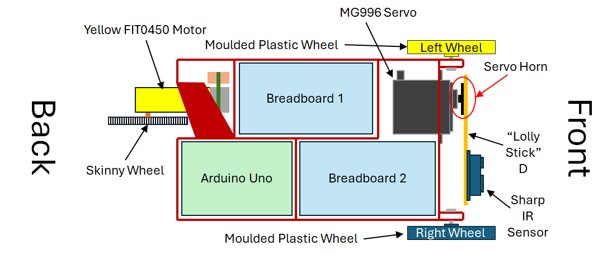
Due to the design of the robot chassis, some elements of the robot must be constructed in the order described, due to overlapping parts, see
- Attach the yellow FIT0450 motor to the back of the chassis
- Attach the skinny wheel to the motor
- Attach the cheap plastic wheels to the front of the chassis
- Attach the MG996 servo to the front of the chassis
- Attach the IR sensor to Lolly Stick D
- Attach the lolly stick to the servo horn
- Attach the assembled lolly stick with IR sensor and servo horn to the servo shaft.
Attaching the FIT0450 and Skinny wheel
This is the most awkward component to attach to the chassis, because the orientation motor must be manipulated to slide into the final location and screw into place. The procedure for assembly is as follows:
- Push 2x M3x30 through the motor, from the brass shaft side.
- Carefully insert the motor into the chassis and manipulate it so that the screws are aligned with the screw holes in the chassis side wall.
- With a screwdriver inserted through the access holes in the chassis, push the screws through the holes and use 2x M3 nuts to fasten the motor to the chassis, shown in
Fig 3b and c . - Push the skinny wheel onto the motor shaft and use an M3x6 machine screw to fasten the wheel to the motor shaft, shown in
Fig 3a .

A video of this process is provided in
Note: This video has no commentary
Note: Skinny Wheels May need drilling out
The M3 mounting hole on some of the skinny wheels is too small. This will need drilling out to 3mm. Please see one of the lab technical staff in the lab session if this is the case.
Attaching the Moulded Plastic wheels
The moulded Plastic wheels attach to the robot chassis as shown in

Do this Before Attaching The MG996 Servo
These wheels must be attached before the servo, because the servo obscures access to the screw heads for the left wheel.
Attaching the Lefthand Moulded Plastic Wheel
The lefthand moulded plastic wheel is the wheel next to the servo, at the front of the robot, and should be attached first. To attach this wheel, you require an M3x20 bolt and an M3 nyloc nut. The moulded plastic wheels are attached to the lugs at the front of the robot chassis.
The bolt for this wheel Must be pushed through from the between the lugs, with the head infront of the rectangular servo hole. This is to ensure that the servo hole is not obsured and an be inserted correctly.
Note: This video has no commentary
Attaching the Righthand Moulded Plastic Wheel
The righthand moulded plastic wheel is the wheel away from the servo, at the front of the robot, and should be inserted second. To attach this wheel, you require an M3x20 bolt and an M3 nyloc nut. The presence of the lefthand wheel makes screwing in the bolt difficult, if inserted from between the lugs - we advise inserting the screw from the outside of the lugs, with the bolt on the inside.
Note: This video has no commentary
Note on wheel screw tightness
When fastening the screws on the moulded plastic screws, ensure that you have sufficiently tightened the nyloc nut to prevent too much wobble in the wheel, but the wheel is still able to spin freely.
Attaching the MG996 Servo
Attach the moulded plastic wheels before the MG996 Servo
You must attach both plastic wheels before attaching the MG996 servo, otherwise, the MG996 servo bolts will obscure the placement of the moulded plastic wheel screw.
The MG996 servo is attached to the robot chassis using 4x M3x12 screws, as illustrated in

Note: This video has no commentary
Note: The hole for the servo has been modified since this video was filmed
For reasons of strength and printing yield, the hole for the servo has been modified on many of the robot chassis, meaning that it is a little tighter than shown in the video. With a little wiggling, you can fit the servo into the rectangular cut-out.
Also note: the servo attachment screws have been changed to all M3x12 screws, from those shown in the video.
Assembling the Lolly Stick D Assembly
The lolly stick assembly consists of the Sharp IR sensor, a laser cut plywood linkage and a servo horn for the MG996, as shown at the bottom of

Note: you can use any of the servo horns, shown at the top of
It is recommended that you assemble the lolly stick assembly as shown in
The IR sensor is fixed to the lolly stick with 2x M3x6 screws and 2x M3 nuts, as can be seen in
The servo horn is attached to the lolly stick using 2x M2x8mm Phillips Head Flange Screws.
Warning: Sharp Screws
The sharp ends of the Flange screws will protrude through the opposite side of the servo horn. Please be careful while handling this assembly to prevent causing minor injury on the protruding screws.
Attaching the Lolly Stick D Assembly to the Servo
The servo horn pushes onto the servo MG996 servo shaft, then a M3x6 screw is used to fix it into position. Once attached, ensure the servo can rotate between horizontal and vertical, see
Info
This assembly will require repositioning at the start of the control of the standard servo exercise to ensure that the position is set correctly for the exercise.
{kind=link}
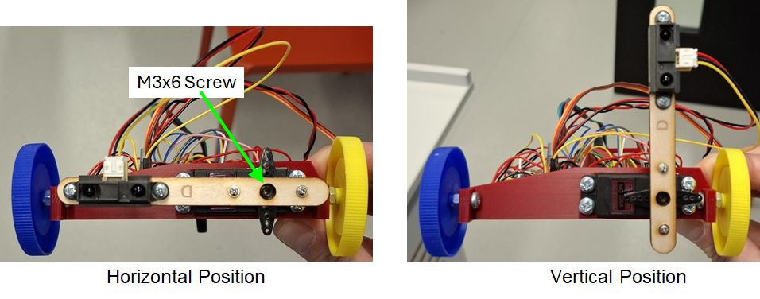
Electronic Component Layout and Connections
The layout of the electronic components on the breadboard is entirely up to you, but following sections illustrate how they were laid out during the design and prototyping stages of these exercises. The author recommends following this layout because it also follows the example code provided for the exercises, and it is a tried and tested layout.
The connections for each exercise are discussed in more detail in the
Breadboard layouts
We suggest that the components should be placed on the two breadboards, as shown in
- Breadboard 1: the LEDs, button and the motor driver board.
- Breadboard 2: the DC power inlet socket, 10K potentiometer and a 12-way header strip, used to connect the motor power and encoder, MG996 servo and the Sharp IR sensor.
The location of breadboard 1 and breadboard 2 in the robot chassis is illustrated in
{kind=link}
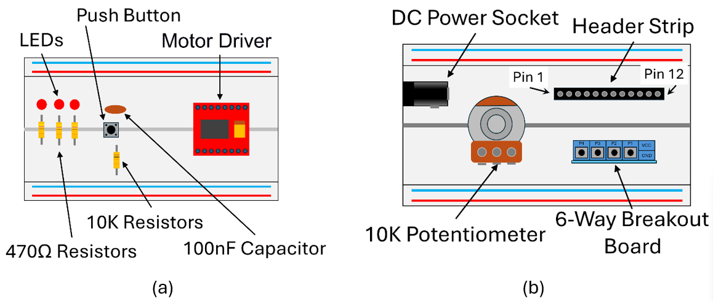
External DC Power Socket and Connection
Some of the robot systems draw too much power to be supplied directly from the Arduino, via the USB link. If you were to power the MG996 Servo or the DC motor from the Arduino, then you may pull too much power from the +5V rail and experience erratic behaviour due to the Arduino intermittently restarting – this is referred to as a
{kind=link}
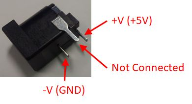
In previous years, we have had problems with the DC power connector slipping out of the breadboard. To significantly reduce the chances of this, a cable tie can be used strap the dc connector down to breadboard 2, as illustrated in
{kind=link}
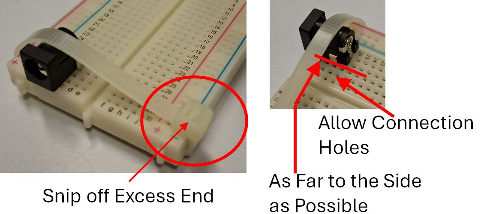
Note
Ensure that the cable tie is tight around the board and the connector will not move, before snipping the loose end.
The following section provides important details concerning the two different power supplies on the breadboards, and MUST be read before continuing.
Arduino and External Power Supplies Lines
There are two +5V power supplies on the robot chassis:
- The +5V supply from the Arduino
- The external +5V from the AC-DC Plug-in Power Supply.
UNDER NO CIRCUMSTANCE should the +5V line from the Arduino be connected to the External 5V line. You must, however, connect all the GND lines of these power supplies, and other systems, to a common GND net/node on your robot chassis to ensure that all the working from the same reference voltage.
The external +5V should only be connected to the Vm connection of the motor drive board and the V+ power connections of any servo used on your system. The Arduino +5V should be used for the Vcc connection of the motor drive board and any other connection requiring +5V, which is not connected to the external +5V.
Danger: You can destroy your Laptop motherboard if you get this wrong
If you connect the +5V supply of the Arduino and the external power supply together you risk destroying the motherboard of your laptop by sending a voltage spike up the USB lead when the servo or the DC motor operate.
Read the Disclaimer document before proceeding.
The University and MEE take no responsibility for damaged laptops due to this issue. We recommend using the University IT equipment to mitigate damaging your personal equipment.
At this point you may have noticed that we don't want you to connect the external +5V to the Arduino +5V. This is because we don't want to tell any other student that we will not be paying for repairs to their personal IT equipment... It is not a fun conversation to have!
Suggested Circuit Layouts for the Exercises
The electronic system for the robot can be incrementally built as required for the exercise you are working on. The exercises are designed, such that, you only need to add components to the system, with the later exercises build on the previous. This means that no circuitry needs to be removed between exercises.
Before you start any of the following exercises, you will need to add extra elements into your robot circuit.
- Basic: LED Pattern
- No extra circuitry is required for the Calibration of Potentiometer Angle Exercise. This uses the potentiometer from the LED Pattern Exercise.
- Basic: IR Sensor Measurement + Graph
- Basic: Externally Powered Servo
- Basic: DC Motor
- Basic: Encoders and Motor
Note: Advanced Exercises
The advanced exercises do not require any extra circuit build. They work from the circuit that has been constructed for the final Basic Exercise: Encoders and Motor.
Note on the circuit layout diagrams in the following sections
The circuit layout drawings in the following sections are constructed using several drawing packages. As a result, some of the components/connections do not line up exactly, as desired. Please use these diagrams with the accompanying figures and tables to provide you with a complete picure on how to build the circuit.
Circuit Layout for the LED Pattern and Calibration of Potentiometer Angle Exercises
The following circuit layout is sufficient to complete both the LED pattern Exercise. This section illustrates where to layout and the connections for: the three LEDs and associated resistors, the button and the potentiometer, as illustrated in

The extra components list required for this exercise, shown in
- 3x LED
- 3x 470Ω resistor
- Tactile button
- 100nF capacitor
- Potentiometer
- 12-way header
| Arduino Pin: | Description: |
|---|---|
| DIO 4 | Button |
| DIO 11 | LED 1 |
| DIO 12 | LED 2 |
| DIO 13 | LED 3 |
| A5 | Potentiometer Input |
Circuit Layout for the IR Sensor Exercise
This section illustrates the connection of the Sharp IR sensor into the circuit, required for the IR Sensor Measurement and Graph exercise, as illustrated in

Extra parts required for this configuration:
- Sharp IR Sensor
- Sharp IR Sensor cable
- 6-way Screw Terminal Breakout Board
The Sharp IR Sensor interfaces with the breadboard using the 6-way screw terminal breakout board, shown in
{kind=link}
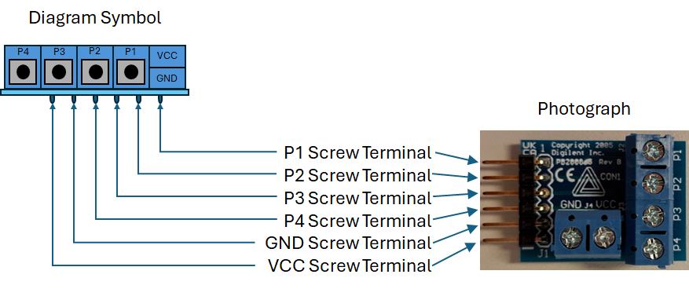
| Arduino Pin: | Description: |
|---|---|
| A4 | IR Sensor Output |
The Sharp IR sensor cable has bare wire terminations that should be connected to the 6-way screw terminal breakout board using the connections listed in
| IR Sensor Wire: | Description: | Breakout Board Terminal: |
|---|---|---|
| Yellow | IR Sensor Output | P1 |
| Red | +5V Power | VCC |
| Black | 0V Power (GND) | GND |
Circuit Layout for the Externally Powered Servo Exercise
The servo will be used in the
Warning
UNDER NO CIRCUMSTANCE should the +5V External power supply be connected to the +5V Arduino supply. You must, however, connect all the GND lines of these power supplies, and other systems, to a common GND net/node on your robot chassis to ensure that all the working from the same reference voltage.

The extra components list required for this exercise, shown in
- DC Servo
- DC power socket (SG90 for the
initial servo exercise and final assessed Exercise)
Note
The
| Arduino Pin: | Description: |
|---|---|
| DIO 6 | Servomotor Signal Pin |
Circuit Layout for the DC Motor Exercise
The DC motor exercise requires both the TB6612FG and the DC motor to be wired into the circuit, as illustrated in

Extra parts required for this configuration:
- TB6612FG driver board
- DC motor
- DC motor power cable
Due to the most convenient orientation of the TB6612FG motor driver board on the robot, we will be using channel B for these exercises. The TB6612FG driver board is shown in
{kind=link}
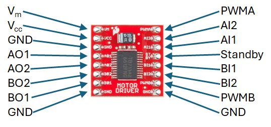
| Arduino Pin: | Description: |
|---|---|
| DIO 9 | PWM Signal Pin |
| DIO 7 | BI1 Signal Pin |
| DIO 8 | BI2 Signal Pin |
Note
All the GND connections are internally connected on the TB6612FG breakout board, therefore, only one GND connection is needed to the power system.
The DC motor power power terminals are connected through the
Circuit Layout for the Encoders and Motor Exercise
The final part of the circuit to connect is the motor encoder to the Arduino, as illustrated in

Extra parts required for this configuration:
- DC motor encoder cable
| Arduino Pin: | Description: |
|---|---|
| DIO 2 | Encoder B Signal |
| DIO 3 | Encoder A Signal |
The 12-Way Header Connections
The 12-way header connector provides a convenient method for interfacing some of the system components: motor, encoder, servo and, IR sensor, to the breadboard for easy connection to the remaining electrical system. A summary of the connections used in development are provided in
Note
During the writing of this document, the 6-way header was added to the assembly to replace some of the 12-way header connections. As a result, some of the 12-way header connections, listed in
Introductory and Supplementary Material
Introduction
This section is aimed at ensuring that there is a getting started guide to the Arduino IDE and a self paces tutorial structure for students that are not confident with C or Arduino programming. There are two documents in this section:
- The
Supplementary Signposting Document to Accompany the introductory Exercises document: This document is aimed as a point of reference for students that are not confident with C or Arduino programming. The document provides reference links to external websites and the specific parts of theArduino Language Reference pages, relating to elements of the Introductory exercises. - The "Getting Started"
Introductory Exercises are aimed at students that have little or no experience with Arduino and aimed at getting you started with installing and setting up the Arduino IDE, ready for use with these laboratory activities, and programming with simple I/O. These exercises are formative and non-assessed.
To provide you with comprehensive instruction into C-programming is both outside the scope of this module and would take far more time than is available for the teaching/contact time allocated to this module. There are countless very good on-line resources for self-paced learning of programming languages. Therefore, instead of writing yet another tutorial, the
Supplementary Signposting Document to Accompany The Introductory Exercises
Pre-face
This document is aimed at students with little or no C-programming experience, but maybe used as a signposted reference for anyone. For students with little or no C-programming experience, this document can be used in parallel to the
Students with some C-programming skills may wish to skip this document, and go on to the only use the
Introduction
In previous years it has become evident that some groups of students, taking the Mechatronics modules, do not have any background experience on programming in C/C++ or experience with using Arduino or other microcontroller based development systems. As a result, these students have struggled with some of the basics of the Mechatronics laboratory activities, due to not having learned any C-programming skills before starting this module.
To provide you with comprehensive instruction into C-programming is both outside the scope of this module and would take far more time than is available for the teaching/contact time allocated to this module. There are countless very good on-line resources for self-paced learning of programming languages. Therefore, instead of writing yet another tutorial, this document will provide you with some signposts to resources for basic C programming topics that we think are necessary to facilitate the laboratory activities within this module.
Note
This document is not aimed at providing you with a comprehensive list of topics required for this module, and it may be necessary for you to discover further resources to improve your programming knowledge and skills.
In this iteration of this document we will signpost some of the tutorial resources from
It will be up to you to self-guide your own learning to improve your skills and understanding, required for the labs and your project activities, and if necessary discover further resources. (If you do find topics/resources that you think would be of benefit, please make us aware of these, and if appropriate, we may provide further sign posting to these materials.)
The remaining subsections of the introduction highlight some resources you may find useful whilst going through the remainder of this document, and while you are completing the mechatronics module laboratory exercises and project.
External tutorial websites linked from this document
The tutorials provided on
Each
Another useful resource is
Note
In the next section of this document we have selected relevant sections from the
Arduino Language Reference
The
Note
Relevant sections of the
Arduino Build-in Examples within the Arduino IDE
There is a
Some of the links sections within the
Introduction to Programming an Arduino in C.
The remainder of this document is aimed at providing you with a structured set of signposted links to help build your understanding of the basics of C-programming. This document will signpost you to a number of tutorials on the
The Arduino programming libraries are a series of C/C++ functions that can be called from the code you write. The native programming languages for Arduino are either C or C++. Throughout the remainder of this module, we will only be considering programming Arduino in C.
(For those interested, there is a brief overview and history of the C-programming language on the
Hello World Example
A typical place to start with any programming language is the “Hello World” example - (See the
The Standard Output in Arduino
In Arduino, there is no standard output, because it is an embedded operating system operating without a console terminal. Generally, we direct the standard output to the
The following programming syntax, (linked from the Arduino language reference), are necessary for correct implementation of your code:
Code comments are a readable explanation or annotation of the code that you have written. You should provide comments throughout your code to help explain what you have written and why you have written it in that way. Code comments are an invaluable tool to help you debug code that is not working in the manner intended, and should be updated when code is changed. Links to how to implement code commenting in Arduino:
Simple Macros are a very useful tool when writing clear and effective embedded code, not only helping with the readability of your code, but also help when trying to debug your work. The
Whilst programming, you may wish to link an external library into your Arduino code. The
Variables and Numbers
One of the key considerations when programming computer systems and embedded systems, is the handling and storage of different types of numbers. The
(Also see the Using Variables section of the
Arrays are a data structure that is essentially a list/collection of values of the same data type, arranged in an indexed manner - See
(Another, and more comprehensive, reference for Arrays in C, is provided in
Functions
Functions are blocks of code that perform a predefined set of commands, and are either used to ‘tidy-up’ your code to make it more readable, or to perform repeated activities. As you write your Arduino code, you will be using some of the built-in and 3rd party library functions, and you may also wish to define your own.
Functions are discussed in the
Blink Example - Introductory Exercise
The
Files > Examples > 01.Basics > Blink
The
The Blink example code is a simple test program, often used to ensure the Arduino compiler is working correctly, and the hardware can communicate with the IDE correctly. Look at the Arduino code example, there are three sections to the code:
- Global namespace - area at the top of the code used for declaration of global variables and location for compiler directives, such as #define and #include instructions
setup() function - This function runs once at the start of the program and is generally used to initialise variables, hardware and libraries, and to define I/O pin modes.loop() function - This function is generally the main body of your Arduino program, and loop continuously, allowing your system hardware to be read and controlled each loop iteration.
You will notice the use of the
At this point is worth signposting:
- The while loop is a programming structure that will continuously loop until a logical termination is satisfied
- The for loop is a programming structure that will loop for a pre-specified number of iterations.
Learn-C provides tutorials for the
Decision making
One of the basic tasks we use computer systems for is decision making, based on logical conditions and inputs. The Learn-C
At this point it is worth mentioning the switch case structure in C. This is a more advanced topic but you may find it a useful programming structure for your projects:
The switch case structure can be used in the place of a long if structure that uses a definite value of a control variable to select one or more blocks of code to be executed. Switch case structures and widely used when programming state machine type behaviour.
Serial Monitor
As previously mentioned, there is no standard output for Arduino hardware. When using Arduino hardware, a serial terminal is often used to read user generated messages from the Arduino hardware, or to stream variable values to a readable interface. The Serial Monitor, in the Arduino IDE, provides a convenient serial terminal to view text based messages generated from your Arduino code.
The
The string data type
Before using the serial monitor it is worth going through the Learn-C Tutorial on
Push button and LED Example - Introductory Exercise
The
Final Comment
The signposting of background C programming resources provided in the previous sections of this document should be sufficient for you to implement the remaining laboratory work in this Mechatronics module. You may wish to find further resources, either on-line or in print, to help you practice your C programming skills, but you will need to discover these yourself.
If you do find further topics/resources that you think would be beneficial in enriching this document, please make us aware of these topics/resources. If appropriate, we may use some of these resources to improve future iterations of this document
Getting Started - Introductory Exercises (Non-assessed)
The Arduino IDE
This section is aimed at providing you with a brief overview into installing and setting up the Arduino IDE, ready for use with these laboratory activities.
The Installing and Using the Arduino IDE on a University Managed PC
The Arduino software is available on all Managed University PC. In the Electronics and Control Laboratory, the software should already be installed on the workstation and laptop PCs. In other areas of the Diamond and the wider University campus, you may need to install Arduino using the Software Centre application.
Note: As you should be aware, you can’t download and install software on the University Managed PC from the internet.
Installation and Setup of the Arduino Software on your own
NOTE: The procedures laid out in this section are only for use on your home computer. The PCs you will be using in the University laboratories and computer rooms already have the Arduino software installed, or it must be installed from the Managed Desktop software Centre.
Also Note: All the documentation for this module assumes you are using a Windows 10 or 11 on a PC. We do not support other operating system versions.
Information about installing the Arduino IDE can be found on the Arduino website at:
Procedure:
Is This working
- Navigate to the Arduino IDE download page:
https://www.arduino.cc/en/Main/Software download the appropriate version of the Arduino IDE for your operating system. - Launch the Arduino IDE, to check it has been installed correctly
-
Ensure you have the latest version of the hardware drivers for the Arduino board:
- From within the Arduino IDE, select the Tools Menu and navigate to the Board Manager: Tools > Board: [name is the current board] > Boards Manager…
- From the Boards Manager menu that appears on the left side of the Arduino IDE, Find the Arduino AVR Boards item and ensure the latest version of the driver is installed. You can check if there is a more up-to-date version by clicking on the dropdown box in the Arduino AVR Boards section, and seeing if there is a higher version available than the installed version indicated at the top of the section – do not install a lower version.
-
At this point you should connect the Arduino Uno to your system and direct the Arduino IDE to the correct Arduino board type and Port to allow your Arduino device to be programmed.
- It you do not know how to do this, please look at the Getting Started with Arduino UNO guide on the Arduino website:
https://www.arduino.cc/en/Guide/ArduinoUno
- It you do not know how to do this, please look at the Getting Started with Arduino UNO guide on the Arduino website:
Laboratory Exercises
Simple Digital I/O
Note
The remainder of this section is provided for students with no experience of using Arduino and serves as a tutorial example of how to use the Arduino IDE, in its most simple form.
The Arduino microcontroller is a powerful tool to build a wealth of mechatronics and robotic projects. We are just getting started - so let’s introduce how to work with push buttons and LEDs. These elements are digital inputs and outputs, and are representative of the type of actions we typically want in mechatronics projects: we want that upon a command (e.g., pressing a button), an action to take place that can modify the environment in a sensible way (e.g., a noticeable light on or off).
Note
Before starting the laboratory exercises, you should review the contents of the "Mechatronics KIT Information" folder, located in the Lab Practicals (Sem 1) content area of the Blackboard site for the Mechatronics course.
Intro Exercise 1: Blink Example
The aim of this exercise is to demonstrate how to upload and run a simple Arduino program.
The Blink example is a good way to test the installation of your Arduino software, and also to identify if there is a major problem with your Arduino hardware.
Procedure:
- Load the Blink example from the Arduino IDE files menu: Files > Examples > 01.Basics > Blink, as shown in
Fig. 1 :
{kind=link}
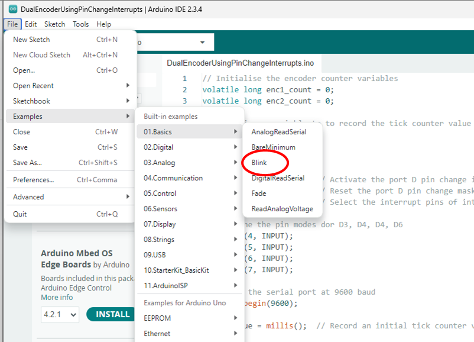
Note
The built-in examples, provided in the Arduino IDE, are a great way of finding out how to do certain operations and use some programming constructs.
- You compile and upload your Arduino program, or Sketch, by pressing the Press Upload button, as highlighted with a red circle in
Fig. 2 :
{kind=link}
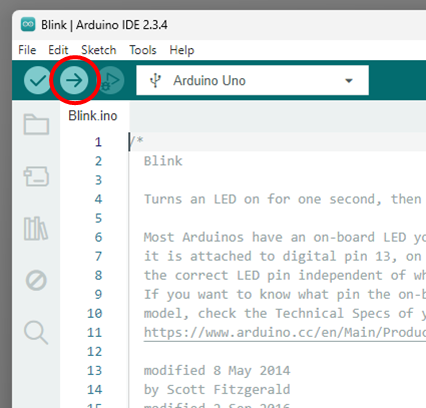
After the IDE compiles and uploads your program, the Arduino should start to run your code. For this example, this will be indicated by the LED, “L”, (highlighted in Red in

- The setup() and loop() functions of the Blink example are shown below. Modify the values in the delay() functions, (highlighted in red) and investigate its effects again. What happens?
(See the Arduino Language Reference, from the Arduino website, for details of the delay() function:
You should observe that changing the value in the brackets for the upper delay() function, changes the on-time of the LED, and changing the value of the lower delay function, changes the off-time for the LED.
Intro Exercise 2: Push Button and LED
The aim of this exercise is to use a digital input, in this case from a push button, to trigger the Arduino to produce a digital output. In this case and LED, as illustrated in the circuit shown in
Wiring Procedure:
- Using the Kit of parts provided, connect the circuit as shown in
Fig. 4 .- It is not essential to maintain the colour of wires illustrated in the diagram.
- The digital input from the button is connected to pin 2
- The digital output to the LED is connected to pin 13, (shared with the LED “L” on the Arduino board)
- The resistor connected between the button and the GND line is 10K, and the resistor connected between the anode of the LED and pin 13 of the Arduino is 470Ω.
Note
There is a guide to reading resistor values in the Mechatronics Kit Information section of the Blackboard site.
Note
The digital Input, on pin 2, is ‘pulled’ down to the 0V supply rail by the a 10K resistor, (a resistor used in this manner is often referred to as a pull-down resistor). In this configuration, when we press the button, the digital input is connected to the +5V supply rail. When the button is released, the 10K resistor ‘pulls’ the digital input back down to 0V. without the 10K resistor, the input would ‘float’, and may produce a spurious input when the button is released.
{kind=link}
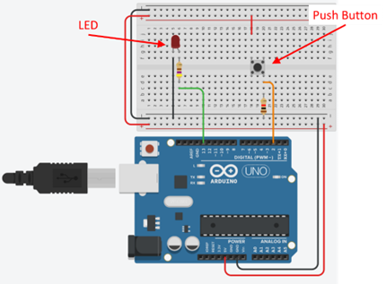
The code for this exercise can be found by selecting the in-built Button exercise from the Files menu in the Arduino IDE: Files > Examples > 02.Digital > Button
Procedure:
- Run Button example Arduino sketch: you should see the LED light up when you press the button, and the LED should go out when you release the button.
Note
It is often the case that we may wish to view data directly from within an Arduino program. To achieve this we can use the Serial library to stream data from the Arduino, across a COM interface (this can be the same COM port you are using to program the Arduino) to a terminal – we can use the Serial Monitor in the Arduino IDE for convenience.
The modified Button example code,
// Initialise communications with the serial monitor. Parameter: baud rate
Serial.begin(9600);
...and
// Write the value of the buttonState variable to the serial monitor
Serial.println(buttonState);
These extra commands initialise the Serial interface, and write data to the COM port. A description of the Serial commands can be found in the Serial functions section of the Arduino reference guide:
// constants won't change. They're used here to set pin numbers:
const int buttonPin = 2; // the number of the push button pin
const int ledPin = 13; // the number of the LED pin
// variables will change:
int buttonState = 0; // variable for reading the push button status
void setup() {
// Initialise communications with the serial monitor. Parameter: baud rate
Serial.begin(9600);
// initialize the LED pin as an output:
pinMode(ledPin, OUTPUT);
// initialize the push button pin as an input:
pinMode(buttonPin, INPUT);
}
void loop() {
// read the state of the push button value:
buttonState = digitalRead(buttonPin);
// Write the value of the buttonState variable to the serial monitor
Serial.println(buttonState);
// check if the push button is pressed. If it is, the buttonState is HIGH:
if (buttonState == HIGH) {
// turn LED on:
digitalWrite(ledPin, HIGH);
} else {
// turn LED off:
digitalWrite(ledPin, LOW);
}
}
Links to all the Serial function descriptions are listed towards the bottom of the
To open the Serial Monitor, from the Arduino IDE, click the button in the top right of the IDE, as highlighted in

Procedure:
- Modify the Button example sketch, and open the Serial Monitor
- Run the code: You should see a ‘1’ printed on the serial monitor when the button is pressed, and the serial monitor should display ‘0’ when the button is released.
Basic Exercises
The assessed exercises are split into sections:
- Basic Exercises: These are more concerned with the fundamentals of getting a specific interface, sensor, or actuator operating.
Advanced Exercises : These are more concerned with integrating the elements of the Basic Exercises into a working system, to achieve a goal. During the Advanced exercises you will also work with slightly more advanced programming concepts, such as implementation of a PI Controller and simplefinite state machines , (we will provide programming templates for both of these topics).
As discussed in the
- Basic:
LED Pattern - Basic:
IR Sensor Measurement + Graph - Basic:
Externally Powered Servo - Basic:
DC Motor - Basic:
Encoders + Motor
You must complete, and have had marked, all of these exercises before you can gain credit for the
A suggested timeline for achieving only the basic exercises is provided in the
Each of these exercises will be assessed during the laboratory session, using the assessment structure outlined in the Appendix section of this document. When you have completed an assessed exercise, you should get your work marked one of the GTAs.
Warning
DO NOT leave all your exercises until the end of the 3rd laboratory session to get marked. This may result in you running out of time to get your work marked within the allotted time, and you will lose marks. Instead, you should get your work marked as you complete each assessed exercise.
LED Pattern
Introduction
During the LED Pattern exercise you will generate a repeating sequence on 3 LEDs, use a potentiometer to change the cycle rate of the sequence, and use a push button to pause the sequence.
GTA Marking
This is an assessed Exercise. When you have completed part 3, you should ensure that you have completed all the
Note
Before starting these exercises, you should ensure that you have added the LEDs, the button and the potentiometer to the breadboards on the robot chassis, as suggested on
The following video is a quick demonstration of the final outcome from this exercise:
Part 1: LED Sequence
During this part, you will write a program to create a repeating sequence of LEDs, with a fixed sequence time step, e.g. say every ½ second. A suggested LED sequence is shown in
| Sequence Index: | LED 3 (DIO 13) | LED 2 (DIO 12): | LED 1 (DIO 11): |
|---|---|---|---|
| 0 | 0 | 0 | 0 |
| 1 | 0 | 0 | 1 |
| 2 | 0 | 1 | 0 |
| 3 | 0 | 1 | 1 |
| 4 | 1 | 0 | 0 |
| 5 | 1 | 0 | 1 |
| 6 | 1 | 1 | 0 |
| 7 | 1 | 1 | 1 |
We will not provide any example code to facilitate this exercise, you must create this code from scratch, possibly using some of the example code provided in the
Procedure:
- Ensure that the circuit is correctly connected:
- We suggest the anode of the LED be connected to Arduino pins DIO11 to 13.
- Each of the cathodes of the LEDs should be connected through a 470Ω resistor to ground.
- Write a program to change the pattern of the LEDs at a fixed rate, say every ½ second, and loop through the sequence continuously. We suggest using the sequence from
Table 1 . - If you do not use the sequence provided in
Table 1 , your sequence should have at least 8 patterns, some but not most may repeat. - For this we suggest using a delay function to control the timing of the sequence. The rationale for this is that we will replace the bracket value on the
delay()function with the ADC read value, to control the speed of the sequence. - Ensure that you save your code when you have completed this part.
Note
We strongly recommend using the suggested connection and layout provided in
Part 2: Potentiometer Control of the Sequence Rate
Info
It is suggested in the
This part of the exercise is split into two sub sections:
- Using the
POT.ino test program to read the potentiometer value and display it on the serial monitor. - Modifying the LED sequence code so that the potentiometer value is used to control the pattern change rate of the LED sequence.
Section 1: The Read the Potentiometer Test Program, POT.ino
The aim of the
Procedure:
- Copy the
POT.ino code into a black Arduino sketch and save it into your working folder. - Ensure the LEDs and potentiometer are connected into your circuit, as described in the
Building the Robot Document - Ensure the potentiometer is connected into the circuit.
- Connect left hand pin of the potentiometer to GND and the 5V and the right hand pin to +5V.
- It is suggested that the middle pin of the potentiometer is connected to the analogue A5 pin.
The analogue to digital converter, ADC, inputs to the Arduino have 10 bits of resolution (i.e. 1024 different values). By default, they measure from ground (0V) to 5 volts. That means that the 0-5V range of the potentiometer will be proportionally mapped to the 0-1023 digital values range in the microcontroller.
- Upload the program to the Arduino, then open the serial monitor and observe data being streamed to the terminal.
- Rotate the knob of the potentiometer and observe the range that the data spans.
- Observe the rightness of the LED as you rotate the potentiometer.
- Ensure that you save your code when you have completed this section.
This example program uses the map() function to ‘map’ the ADC measurement values between 0 and 1023, to a range of 0 to 255. This new range is required to write the PWM signal to change the LED brightness – PWM will be covered in the next lab session, so for this example, just assume this is an analogue output from the Arduino.
Look at the code and see how the map() command is used. The Arduino language reference for the map command can be found at:
Section 2: Integrate the Potentiometer Value Into Your LED Sequence Program
During this section you will integrate the reading of the potentiometer into the program for your LED sequence, and use the ADC value to control the delay function in the main loop.
Procedure:
- Starting with the code you wrote in
Part 1 , modify your code to read the voltage value of the potentiometer, using the ADC, each time the sequence value changes. - The ADC value should be used to control the
delay()function time within the sequence loop. - Ensure that you save your code when you have completed this section.
When you rotate the potentiometer to the right, the sequence should speed up, and when you rotate the potentiometer to the left, the sequence should slow down. There should be a continuous variation in sequence speed proportional to the position of the potentiometer between the left and right extremes.
Part 3: Addition of a Pause Button
During this part, you will implement the reading of the button on breadboard 1 and use the button value to pause the execution of the sequence.
Procedure:
- Starting from your code that you completed in
Part 2, section 2 , implement a button read from the button on breadboard 1. - Use this the pressed value of the button to hold the flow of execution until the button is released.
Exercise Assessment
What do we expect to see from the demonstration?
- The three LEDs should be flashing in a continuously repeating sequence of at least 8 different patterns.
- When you rotate the potentiometer to the right, the sequence should speed up, and when you rotate the potentiometer to the left, the sequence should slow down. There should be a continuous variation in sequence speed proportional to the position of the potentiometer between the left and right extremes.
- When the button is pressed, the sequence should pause, but not reset.
Now Get Your Work Marked by a GTA
Once you have completed your code and are satisfied with its operation, you should show your work to a GTA for marking.
Appendix: POT.INO Code
// Global Name Space
int potAnalogPin = 5; // FSR is connected to analog 0
int LEDpin = 11; // connect Red LED to pin 11 (PWM pin)
int potReading; // the analog reading from the FSR resistor divider
int LEDbrightness;
void setup(void) {
// We'll send debugging information via the serial monitor
Serial.begin(9600);
pinMode(LEDpin, OUTPUT);
}
void loop(void) {
potReading = analogRead(potAnalogPin);
Serial.print("Analog reading = ");
Serial.println(potReading);
// we'll need to change the range from the analog reading (0-1023) down to
//the range used by analogWrite (0-255) with map!
LEDbrightness = map(potReading*1, 0, 1023, 0, 255);
// LED gets brighter the harder you press
analogWrite(LEDpin, LEDbrightness); // here you are using PWM !!!
delay(10);
}
Measure the Output of the Sharp IR Distance Sensor
GTA Marking
This is an assessed Exercise. When you have completed the
Note
Before starting these exercises, you should ensure that you have completed the circuit on the robot chassis, as suggested on
The following video is a quick demonstration of the final outcome from this exercise:
Introduction and Background
The aim of this exercise is to generate a graph of sensor measurement from the Sharp IR distance sensor against measurement distance. During this exercise, you will interface the Sharp IR distance sensor with the Arduino, record the measured voltage as a function of the distance to a target, and observe any constraints for the operation of this sensor.
Before you start this exercise, you will need to construct the circuit according to
Noise on the IR sensor
The IR sensor is not an ideal sensor and induces noise onto the output of the sensor, as shown in
{kind=link}
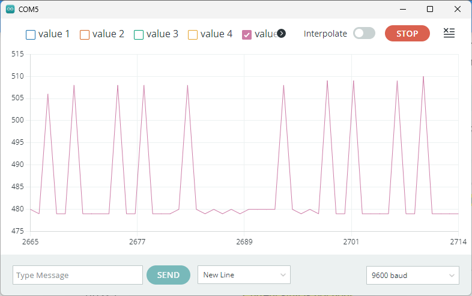
A
//Read the IR sensor
irVal = analogRead(irPin);
// accumulate a further 7 readings
irVal = irVal + analogRead(irPin);
irVal = irVal + analogRead(irPin);
irVal = irVal + analogRead(irPin);
irVal = irVal + analogRead(irPin);
irVal = irVal + analogRead(irPin);
irVal = irVal + analogRead(irPin);
irVal = irVal + analogRead(irPin);
// right shift 3 places to divide by 8
irVal = irVal >> 3;
{kind=link}
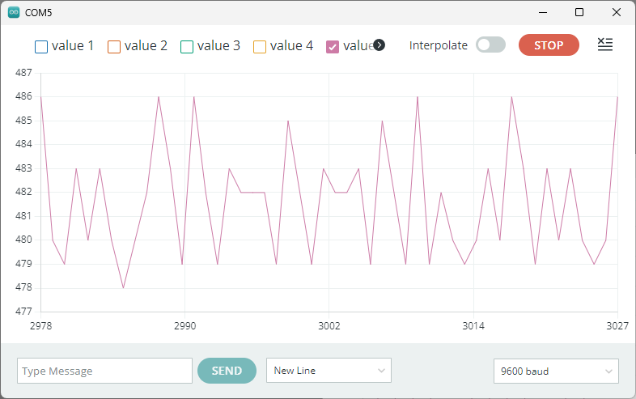
Camparing the magnitude of the noise on the IR sensor measurement, between
Experimental Setup with Lolly Stick up
The IR sensor is sensitive to picking up reflections from any surface that it is operating. It has been found from experimentation, that raising the sensor above the surface that it is operating produces improved and more consistant results.
As a result, when using the IR sensor, you should ensure that the lolly stick assembly is in the upright position, as shown in the righthand figure in the
For more details on concerning the pin connections for the Sharp GP2Y0A21YK0F distance measurement sensor, see the data sheet for the sensor on the Blackboard site:
ACS231 Blackboards Site>>Mechatronics Kit Information>> Component Data Sheets and Technical Documentation.
Expected Results
The IR sensor has a non-linear distance to output voltage characteristic, as illustrated in

Assessed Exercise
For this exercise you will write an Arduino sketch to measure the output of the IR sensor and display its value of on the serial monitor. The distance measurements should be taken at static positions, using a series of measurement points similar to:
1cm, 2cm, 3cm, 4cm, 5cm, 6cm, 7cm, 8cm, 9cm, 10cm, 15cm, 20cm, 25cm, 30cm, 35cm, 40cm, 45cm, 50cm, 55cm, 60cm, 65cm, 70cm, 75cm, and 80cm
You should plot your results in a computer package, such as Excel or MATLAB, with the x-axis as the distance measured, and the y-axis as the ADC measurement value.
Procedure:
- The starting point for this exercise is the
circuit layout for the IR sensor and the potentiometer code,POT.ini located at the end of theLED pattern exercise . - Write an Arduino sketch to read the analogue measurement value from the IR distance sensor and display the reading on the serial monitor. (It is acceptable to use a fresh copy of the
POT.ini as a template for this exercise.)
Once you have the measured value of the distance sensor being streamed to the serial monitor, you will be required to plot the distance sensor measurement value against distance measured, (with a ruler/scale).
- Perform an experiment to characterise the Sharp IR sensor between 1cm and 80cm distance. The results from this experiment should be a graph of the ADC measurement value from the Sharp IR distance sensor, against the distance from the target. Note: Your graph should have a similar characteristic to that shown in
Fig 3 .
What we expect to see from your demonstration?
When completed, your code should allow you to run an experiment to draw the following graph:
- A graph of ADC measurement value against distance.
- The trace should be correctly framed within the axes.
- Appropriate axes labels, with units and a descriptive graph title.
You should plot your results in a computer package, such as Excel or MATLAB, with the x-axis as the distance measured, and the y-axis as the ADC measurement value, as illustrated in
Fig 3
We expect you to also demonstrate the operation of your code and the output on the Serial Monitor, as describes in the procedure.
Now Get Your Work Marked by a GTA
Once you have completed your code and are satisfied with its operation, you should show your work to a GTA for marking.
Driving a Servo Motor
GTA Marking
This is an assessed Exercise. When you have completed the Assessed Exercise, you should show your work to a GTA to get marked.
Note
Before starting these exercises, you should ensure that you have completed the circuit on the robot chassis, as suggested on
The following video is a quick demonstration of the final outcome from this exercise:
Introduction
The aim of this exercise is to demonstrate the control of a position control servo, in this case the MG90 servomotor. The MG90 is a very low power servo motor and can be driven directly from the Arduino board power supply.
Controlling a Standard Servomotor directly from the Arduino. (Informal Exercise)
Transitioning to MG90 Servo Motors
We are transitioning away from SG90 servos due to robustness issues and replacing these with MG90 servos. Some of you may still find that you have an SG90 servo in your kit – this is OK, you can use this device with same wiring, fixtures, and code.
The MG90 is a very low power servo motor and can be driven directly from the Arduino board power supply, without the need for an external supply. If you attempt this with the MG996 servo, you may find that the current draw is too great, and this may cause glitches in the power supply lines that cause the Arduino to "
Note on the following Informal Exercise
The exercise is a legacy exercise from a previous iteration of this course and required an unconnected Arduino and a MG90 servo, i.e. not connected into your robot chassis, as shown in
This exercise is not manditory, but provides you with a code example for the operation of a standard servo motor, and the code is applicable for both the MG90 and the larger MG996. This example code, provided, can form the basis of the assessed exercise for the servo integrated onto the robot chassis.
During this exercise, we will use the circuit shown in
- The red wire of the servo is the positive supply, and is connected to the 5V if the Arduino
- The brown wire is the negative supply and should be connected to the ground line.
- The orange wire is the control line and should be connected to a PWM enabled I/O pin on the Arduino board, in this example, pin 9.
{kind=link}
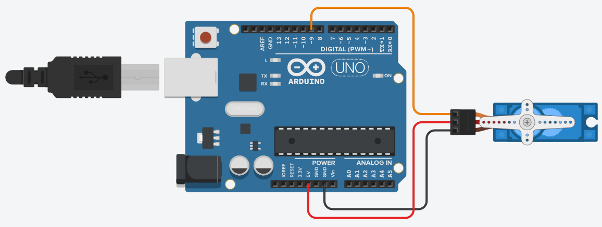
Info
Connecting the wires directly into the servo connector will result in a weak mechanical connection. This connection should be sufficient for this exercise, but if you wish for a more robust connection, you can push the male header pins into the breadboard and use this as intermediate connection.
Procedure:
- Connect the circuit shown in
Fig. 2 . - Download the
Standard_Servo_Example.ino code from the Blackboard folder for this practical. Also included below:
Arduino code for the Standard_Servo_Example.ino Example
// This Example code is for use with the Controlling a Standard Servomotor exercise
//
// Include the servo library to allow for connection and control of servo motors
#include <Servo.h>
// define the macro pinServo1 as 9, to use for connecting the servo to pin 9
#define pinServo1 9
// Declare a servo motor class variable servo 1
Servo servo1;
// -------------------------------------
// Setup function
void setup()
{
// "attach" servo 1 to the defined pin
servo1.attach(pinServo1);
// set the neutral, centre, position for the servo
servo1.write(90);
// Alternte command for setting the neutral position
//servo1.writeMicroseconds(1500);
// wait until the servo has moved into position, (1000ms is more time than needed)
delay(1000);
}
// -------------------------------------
// Loop Function
void loop()
{
// start from the nuetral position, (90 degrees from the fully clockwise position)
servo1.write(90);
//servo1.writeMicroseconds(1500); // Alternate Command
// wait until the servo has moved into position
delay(1000);
// move to 0 degrees, (fully clockwise)
servo1.write(0);
//servo1.writeMicroseconds(500); // Alternate Command
// wait until the servo has moved into position
delay(1000);
// move to 180 degrees, (fully anti cloclwise position)
servo1.write(180);
//servo1.writeMicroseconds(2500); // Alternate Command
// wait until the servo has moved into position
delay(1000);
}
Looking at the code, above, you will see that the servo library had been included in the sketch. This external is library containing several functions that allow the Arduino to control a variety of servo motors. The Arduino reference library webpage for the servo library is located here:
Before you can use the servo control commands in your code, you must first perform the following operations in your code, (look at the code to see how this has been done):
- In the global namespace area:
- Include the servo library
Servo servo1; - Declare a servomotor class variable. This is used by the Arduino IDE to direct your commands to the correct servo motor.
- Include the servo library
- In the
setup()function:- The servo motor class needs to be linked to an output pin. This is achieved using the
attach()function.
- The servo motor class needs to be linked to an output pin. This is achieved using the
In Standard_Servo_Example.ino we have declared a servo class variable as servo1, we have defined I/O pin 9 as the servo control pin, and we attached the servo1 class to pin 9, using the following command: servo1.attach(pinServo1);
The servomotor is controlled using an encoded PWM signal. The on time of the PWM signal should be bounded between 1000μs and 2000μs, with a pulse repetition rate between 40 and 200Hz, i.e. a period between 5ms and 25ms.
The servo centre position, or ‘neutral’ position, of the servo is commanded using a 1500μs pulse width. Typically, the 90° clockwise position is commanded with a pulse width of approximately 500μs, and the 90° anticlockwise position is commanded with a pulse width of approximately 2500μs. These 90° position pulse widths are often slightly different for each servo model, so you may need to refine these timings for servos you have been provided.
The servo library has two functions for controlling the position of the servo:
write(), which directly commands the servo angle.writeMicroseconds(), which commands a specifically timed pulse width for the servo output.
The write() function may not be accurate for the servomotors you have been provided, and may vary between different models. You should investigate the accuracy of these commands when using the write() and writeMicroseconds() for applications which require accurate output angles.
- Look at the Standard_Servo_Example.ino code, and see how the servo library has been used, how a servo is declared and attached to the system.
- Run the sketch and observe its operation
Controlling a Standard Servo with an External Power Supply
The previous exercise demonstrates how to connect and power a small servo directly from the pins of the Arduino device. When operating with several small servos, or one or more larger servos, the power supply from the Arduino will not be capable of providing the power supply requirements for this load. This may result in the servos not working at all, or unpredicted system behaviour, due to
This section will show how to power the servos from an external power supply, while controlling them from the Arduino.
The SG90 is a very low power servo motor and can be driven directly from the Arduino board power supply, as shown in
If we wish to connect a larger servo to the system, then we must use an external power supply to power the servo, as illustrated in
{kind=link}
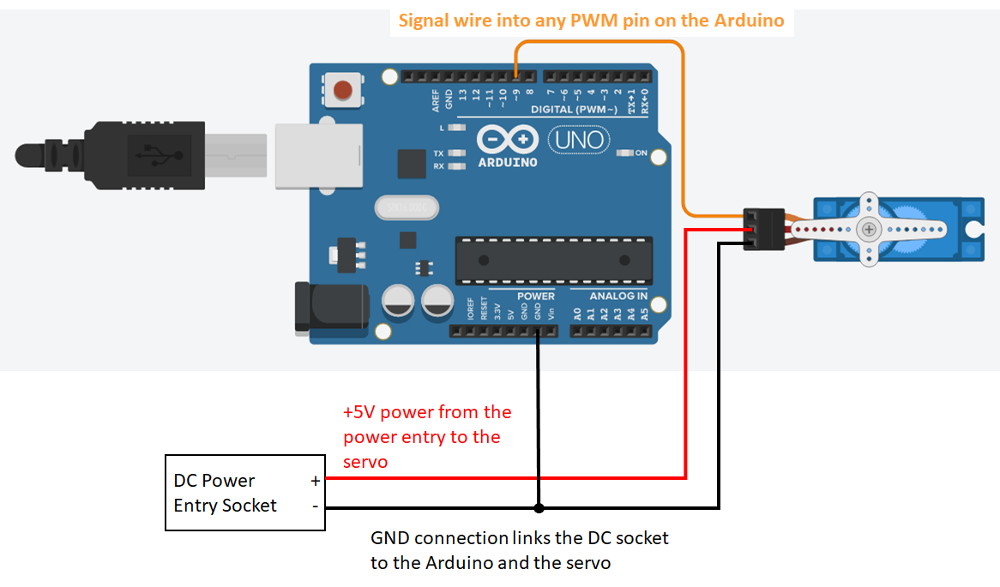
The pin connections for the external power supply connector, (provided in the mechatronics kit box), are shown in
Linear mapping of a Value to a Measurement
In some cases a sensor measurement can be linearly mapped from an input variable to a meaningful measurement value. In this case, we can map the ADC measurement value from the potentiometer, between 0 and 1023, into a servo angle between 90° and 0°, i.e. the lolly stick between horizontal and vertical.
The map function can be used to provide a linear calibration/mapping between a measured value and a real world parameter. In this exercise, you will use the ADC measurement value as the input to a map() function and use it to provide the linear command for the servomotor output.
map() function
See the map() function page from the Arduino language reference pages for a description:
Assessed Exercise: Driving the MG996 Servo on the front of the Robot Chassis
Before Starting This Exercise
Ensure that you have the servo and the external power supply connected, as described in the
The aim of this exercise is to demonstrate that you can operate a standard servo powered from an external supply, and reset the servo to the null position.
Procedure:
- Before starting this exercise, you will need to remove the
lolly stick assembly from the MG996 servo on the robot chassis - Write a program to reset the servo to the null position, using the command:
servo1.write(90); - While the servo is in the null position, reattach the
lolly stick assembly , with the arm as close to horizontal as the servo shaft will allow. - Write a 2nd program, (the assessed part), to perform the following:
- When the Arduino is reset, or initially programmed, the servo arm (lolly stick assembly) should reset to the horizontal position.
- You will need to adjust the initial angle of the servo in code to achieve this, because
servo1.write(90);will not quite achieve this.
- You will need to adjust the initial angle of the servo in code to achieve this, because
- The servo position should remain commanded to horizontal for 1 second
- The servo arm should then raise to the vertical position and maintain this position for 1 second.
- Repeat the above horizontal to vertical process once.
- After a further 1 second delay, the lolly stick angle should track the potentiometer input:
- ADC value, 0 to 1023 maps a to servo angle of approximately 90° to 0°, maps between horizontal to vertical
- When the Arduino is reset, or initially programmed, the servo arm (lolly stick assembly) should reset to the horizontal position.
Note
You will need to adjust the map angles to get the servo to a position as close to horizontal and vertical as possible. 90° servo demand is not exactly horizontal and 0° servo demand is not exactly vertical.
The power supply of your servo MUST be supplied from the external power supply and not the Arduino +5V. The GND of the Arduino, external supply and servo must be connected to the same node.
Danger: You can destroy your Laptop motherboard if you get this wrong
If you connect the +5V supply of the Arduino and the external power supply together you risk destroying the motherboard of your laptop by sending a voltage spike up the USB lead when the servo operates.
Read the
The University or MEE take no responsibility for damaged laptops due to this issue. We recommend using the University IT equipment to mitigate damaging your personal equipment.
What do we expect to see from your demonstration?
Your Servo must be powered from the external power supply during this exercise.
- When the Arduino is reset, or initially programmed, the servo arm (lolly stick assembly) should be set as close to horizontal as possible.
- You will need to adjust the initial angle of the servo in code to achieve this.
- The servo should wait 1 second before raising to as close to the vertical position as possible.
- The servo should wait 1 second before dropping to the horizontal position.
- The servo should wait 1 second before raising again to the vertical position.
- After 1 second, the servo should track the servo position, such that:
- When the potentiometer is in the far right position, the lolly stick is horizontal.
- When the potentiometer is in the far left position, the lolly stick is vertical.
- The lolly stick position tracks the potentiometer with a linear mapping.
Now Get Your Work Marked by a GTA
Once you have completed your code and are satisfied with its operation, you should show your work to a GTA for marking.
DC Motor
GTA Marking
This is an assessed Exercise. When you have completed the Assessed Exercise, you should show your work to a GTA to get marked.
Note
Before starting these exercises, you should ensure that you have completed the circuit on the robot chassis, as suggested on
The following video is a quick demonstration of the final outcome from this exercise:
Introduction
The aim of this exercise is to control a DC motor from an Arduino, using a DC motor driver interface. You will be using a PWM signal to drive the motor.
PWM Control for the DC Motor
PWM is a way of encoding information into a rectangular pulse train. Generally, the period, (and hence the frequency), of the pulse train is maintained constant, and the width of the rectangular pulses are varied – we will assume this definition for the remainder of these laboratory sessions.

PWM can be used in a number of different ways; the most common being to ‘chop’ a DC voltage to reduce its average value, as illustrated graphically in Figure 13. The input voltage, Vin is ‘chopped’, using a converter circuit, into pulses, as shown in Figure 13 (left), where the time integral of the on-state of the waveform is
This can be expressed as an integral equation:
$$ V_{ave} = \frac{1}{T} \int_{t_0}^{t_2} V_{in} dt = \frac{t_{on}} {T_{s}}V_{in} $$
Where: Vin is the supply voltage, and Vave is the average value of the waveform.
This method of operation is used in most electrical power converters to control the power supply to downstream system, such as a motor. Another way in which PWM can be used, is to encode some information as a function of the on-state time, ton, whilst maintaining a constant switching period, Ts. The PWM signal is then decoded by the downstream system and a decision is made on its value.
During the laboratory exercises, you will be driving two different types of actuators:
- A DC motor - to control the speed of rotation, you will need to control the PWM to regulator the average voltage being fed to the DC motor. To interface the motor to the Arduino, you will need to use a motor drive circuit, to supply the current requirements of the motor.
- A standard servomotor - this servomotor will move between 0 and 180 degrees and the angle can be controlled through a 5V pulse signal between 1-2ms and an embedded potentiometer
The DC motor is different from the standard servomotor, in terms of the type of control. For servomotors, the average value of the PWM signal is not being used to regulate the average supply voltage to the device, like it is for DC motors, but instead, the PWM on-time is bounded between 2 values, (1ms and 2ms in this case), and is an encoded signal relating to a rotational position demand parameter for the servomotor, closed loop, controller.
Code Example: Control LED Intensity Example
In this example, we will use the analogWrite() function to generate a PWM signal, which we will use to vary the voltage supplied to an LED, and hence the LED intensity.
A PWM signal can be generated by the analogWrite() function. The value passed to the analogWrite() function can be between 0 and 255, which results in a PWM output between 0% and 100% duty cycle, as illustrated in

(
{kind=link}
The Arduino language reference page for the analogWrite command can be found at: https://www.arduino.cc/reference/en/language/functions/analog-io/analogwrite/.
Procedure:
-
The circuit requirement for this exercise is the LED Pattern circuit, so you should have already built thin onto the robot chassis.
-
Use the following example code to run this exercise:
//This sketch is the Control LED Intensity Example from the Introduction to
// Arduino – PWM control of Actuators laboratory worksheet
// define a macro for the LED pin number
#define LEDpin 11
// -------------------------------------
// Setup function
void setup() {
// define the pin mode for the LED pin
pinMode(LEDpin, OUTPUT);
}
// -------------------------------------
// Lop Function
void loop() {
// Increment a variable, i, from 0 and 255
for (int i = 0; i < 256; i++)
{
// modify the PWM signal, by passing the variable, i, to the
//analogWrite function
analogWrite(LEDpin, i);
//delay the program by 10ms
delay(10);
}
// Decrement a variable, i, from 255 to 0
for (int i = 255; i >= 0; i--)
{
// modify the PWM signal, by passing the variable, i, to the
//analogWrite function
analogWrite(LEDpin, i);
//delay the program by 10ms
delay(10);
}
}
analogWrite() function.
Using the TB6612FNG breakout board
A DC motor cannot be powered directly from the pins of the Arduino board, because the current drawn by the DC motor is too large and could damage the Arduino by overloading the output pins. To overcome this problem, a power electronic driver circuit is required to interface the motor to the Arduino microcontroller board. During this exercise, you will be using a TB6612FNG motor driver breakout board, as shown in
This section is aimed at providing you with some useful information, to help you get started with using the TB6612FNG breakout board. This section will not provide you with all the information you may need, so it will be up to you to research other sources of information to help. There are numerous online guides detailing the interfacing of this breakout board with an Arduino controller.
The TB6612FNG, from TOSHIBA, is a monolithic bridge driver IC, in other words, it is a single integrated circuit containing the power electronic switching and control interface circuitry required for implementing a bridge motor driver circuit. The TB6612FNG contains two independently controlled H-bridge drive circuits. See the data sheet, linked in the following section for more details.
In isolation, an integrated circuit can be difficult to interface with a control system, without a custom PCB design. The use of breakout board circuits provides a convenient way of connecting surface mount chips to breadboard prototyping circuit, and interfacing then with control processors, such as the Arduino devices we will be using.
The TB6612FNG board, shown in
Online Documentation from the manufacturer and other sites
Semiconductor manufacturers often provide information for the use of their manufactured devices in the form of a data sheet, and often provide application notes and other material for more complicated classes of device. Links to some relevant manufacturer’s documentation and some other relevant application documents are provided:
- TB6612FNG Data sheet (TOSHIBA):
TB6612FNG Data sheet . - Data Sheet for the breakout board (Sparkfun):
SparkFun Motor Driver - Dual . - Application note (ST Microelectronics):
Applications of Monolithic Bridge Driver . - Presentation/Training Material (ST Microelectronics):
An Introduction to Electric Motors .
H-Bridge Circuit and Example Code
The TB6612FNG IC is configured to operate as two independent H-bridge circuits, we will only discuss the operation of a single H-bright Circuit, using channel B. The outputs for channel B are BO1 and BO2, and this is controlled using the PWMB signal. The direction of rotation can be configured using the BI1 and BI2 inputs. The operation of an H-bridge circuit is covered in the lecture material for this course, so will not be discussed in detail in this document.
Before proceeding, ensure that you have constructed the H-bridge circuit in
Operation of the TB6612FNG Driver Board Circuit
Each H-bridge circuit is configured using two control inputs, In1 and In2, with a separate PWM input for each bridge. The control operation of the H-bridge is described in
In essence,
Note
The wiring polarity of the motor power, will define if forward is clockwise or anticlockwise rotation. If the connection of the motor is reversed on Out1 and Out2, then the motor will spin in the opposite direction.
Example code is provided, below, to demonstrate simple operation of this motor. The analogWrite() function is used to generate the PWM value for the PWM output, in the following manner:
- 0% duty cycle, (always Low):
analogWrite([PWM pin number], 0) - 100% duty cycle, (always High):
analogWrite([PWM pin number], 255) - Duty cycle between 0% and 100% be generated by writing values of between 1 and 254 to the
analogWrite()function.
The Arduino language reference page for the analogWrite() function can be found at:
https://www.arduino.cc/reference/tr/language/functions/analog-io/analogwrite/
Sample Code for the TB6612FNG Driver Board
// TB6612FNG Driver Board Sample board
//
// Author: Ben Taylor
// University of Sheffield
// Date: September 2024
//
const int pinBI1 = 7; // Pin allocation for BI1
const int pinBI2 = 8; // Pin allocation for BI2
const int pinPWM = 5; // Pin allocation for the PWMB pin
boolean BI1 = 0; // BI1 pin value
boolean BI2 = 0; // BI2 pin value
boolean standBy = 0; // standBy pin Value
boolean rotDirect = 0; // Rotation direction variable
unsigned char pwmValue = 0; // PWM value to be written to the output
void setup()
{
// Assign the digital I/O pin directions
pinMode(pinBI1, OUTPUT);
pinMode(pinBI2, OUTPUT);
pinMode(pinPWM, OUTPUT);
//Initialize the serial port
Serial.begin(9600);
// Set Initial values for BI1 and BI2 control function pins
BI1 = 1;
BI2 = 0;
// set an initial value for the PWM value
pwmValue = 200;
}
void loop()
{
// Write the BI1 and BI2 values to the configuration pins
digitalWrite(pinBI1, BI1);
digitalWrite(pinBI2, BI2);
// Write the pwnValue to the PWM pin
analogWrite(pinPWM, pwmValue);
// Display the board variable status to the Serial Monitor
Serial.print("PWM output value = ");
Serial.print(pwmValue);
Serial.print(", Standby = ");
Serial.print(standBy);
Serial.print(", BI1 = ");
Serial.print(BI1);
Serial.print(", BI2 = ");
Serial.println(BI2);
// wait 250ms
delay(250);
}
Assessed Exercise
During this exercise, you will modify the example code
Procedure:
- Copy and Paste the Sample Code for the TB6612FNG Driver Board into a new Arduino sketch.
-
Read the code, and inline comments. Run the code, and observe its operation.
-
Write a program that can control the speed of the DC motor using a potentiometer input.
- The motor should rotate at maximum speed in a clockwise direction, when viewed from the shaft end, when the potentiometer is rotated to the extreme clockwise position.
- The motor should rotate at maximum speed in an anticlockwise direction, when viewed from the shaft end, when the potentiometer is rotated to the extreme anticlockwise position.
- When the potentiometer is in the centre position the motor shaft should be at zero speed, (stopped)
- The speed of the motor should vary in a linear fashion between maximum speed, when the potentiometer is at its extreme rotation, and zero speed when the potentiometer is in the centre position.
- You should display the following values on the serial monitor terminal, (with a similar text description to the sample code, above):
- ADC measurement value for the Potentiometer input
- PWM value, written to the analogWrite command
- Boolean values for AI1, AI2 and Standby
What do we expect to see in the demonstration?
- Demonstrate that you have fulfilled the requirements of the exercise with your working system.
- The mapping of the potentiometer to shaft speed is consistent with the description above.
- An external power supply is used to power the motor circuit, (Vm on the driver board).
- ADC measurement from the potentiometer, PWM value and control logic Boolean values are clearly labelled and displayed on the serial monitor.
- The serial monitor should update at a reasonable rate – 2 to 4 times a second.
Now Get Your Work Marked by a GTA
Once you have completed your code and are satisfied with its operation, you should show your work to a GTA for marking.
Interfacing the Incremental Encoder from the Gear Motor
GTA Marking
This is an assessed Exercise. When you have completed the Assessed Exercise, you should show your work to a GTA to get marked.
Note
Before starting these exercises, you should ensure that you have completed the circuit on the robot chassis, as suggested on
The following video is a quick demonstration of the final outcome from this exercise:
Introduction and Background
Rotary sensors are used to measure the position and/or speed of a rotating body, (generally a shaft), and can either have an analogue or digital output. The term rotary encoder generally described a digital rotational position sensor.
Rotary position encoders come in two different types:
- Absolute position encoder: This class of devices will indicate the absolute position of a rotating body. This measurement does not require an initial position reference.
- Incremental position encoder: This class of device will indicate the position of the rotating shaft, relative to an initial position or index point. Absolute position can be obtained by knowing the exact initial position, at start-up, or index point, (if the device has an index pulse).
The following link will provide you with some further insight into rotary position encoders:
https://en.wikipedia.org/wiki/Rotary_encoder
Rotary speed can be measured by a rotary shaft encoder, often called a tachometer – we will not further discuss these devices in this document. Shaft speed can be calculated from the position encoder, by measuring the displacement of a rotary shaft and dividing this by the time interval between measurements.
The sensing technologies for position encoders varies between devices, but the two most common are optical and magnetic. The incremental encoder used on the FIT0450 gear motor, (contained within the Mechatronics kit), is a magnetic quadrature encoder. This is a specific type of incremental encoder called a quadrature encoder and has two square wave outputs, A and B, both offset by 90°, as illustrated in

Figure 20 shows the quadrature encoder attached to the FIT0450 gear. This device has a 120:1 gear box attached between the motor and the output shaft. There is a quadrature encoder, comprising of an 8 pole-pair magnetic disc, attached to the back of the motor shaft, and 2 offset Hall effect switch sensors, mounted to the motor body.
What is the difference between a sensor and a switch sensor?
With an analogue sensor device, the output of the device is a continuous variable quantity and may require signal conditioning before the output can be read by a microcontroller. In the case of a switch sensor, the output is either a LOW or HIGH digital level, and the switch sensor contains all or most of the signal conditioning required to interface with a microcontroller.

As the disk rotates, each time a north pole of the magnet passes a Hall effect switch, the output changes from 0 to 1 and back to 0 when the south pole passes. This results in a square wave output from the Hall effect switch as the shaft rotates. The encoder has two Hall outputs, A and B, one for each Hall effect switch sensor. The sensors are offset 90°, (electrically), around the circumference of the disk, consequently, outputs A and B are 90° out of phase with respect to each other, as shown in
The number of magnetic sections of the disc determines the number of “pulses per revolution”, which is a characteristic of each encoder. This is important in determining the minimum detectable angle of rotation and, therefore, the accuracy of the system overall.
As mentioned above, there are 8 magnetic pole pairs on the disk, consequently, there are 8 pulses on the output of each sensor for one revolution of the magnetic disk. The motor has a 120:1 gear box, therefore, for one rotation of the output shaft there will be \(8\times120=960\) pulses on the output of each sensor (or \(960\times4\) digital edges). The positional accuracy of the encoder is, therefore, 960 pulses per revolution, or:
When using a quadrature encoder with a microcontroller, the rotation of the encoder can be fast, leading to high frequency pulses. As a result, trying to read the states of the encoder outputs in the Arduino loop function is not a reliable method for reading the quadrature encoder. If the microcontroller is busy executing other instructions when the pin’s state changes, then the pulse is not counted, resulting in a mismatch between the real angle and the software measurement. A much more reliable way of acquiring the outputs A and B is through a special feature of the microcontroller called an interrupt. The interrupt module can be used to sense an event on a digital input, (in this case the encoder output), and run a special piece of code, to “service” the interrupt. This special piece of code is called an interrupt service routine, or ISR.
In the case of reading the quadrature encoder, we use a level change interrupt on the pins of the microcontroller, attached to the quadrature encoder. Each time there is a level transition in either output A or B, the main code is interrupted and the ISR is run by the microcontroller. This means that whatever the microcontroller is busy doing, the execution is stopped to process the interrupt, and no pulses are lost.
There several ways of using the interrupts to measure the encoder outputs. For maximum resolution, two interrupts are required, but a single interrupt can be used to produce a position resolution of half this resolution.
The method, illustrated in
| ROTATION: | OUTPUT A: | OUTPUT B: | Which ISR? | COUNT: |
|---|---|---|---|---|
| CW | 0→1 | 0 | A | +1 |
| 1 | 0→1 | B | +1 | |
| 1→0 | 1 | A | +1 | |
| 0 | 1→0 | B | +1 | |
| CCW | 0→1 | 1 | A | -1 |
| 1 | 1→0 | B | -1 | |
| 1→0 | 0 | A | -1 | |
| 0 | 0→1 | B | -1 |
The following code snippet is a framework to setup pins D2 and D3 as digital inputs and assign each one an interrupt service routine, ChannelA() and ChannelB(), respectively.
The code provided, below, is a framework to set up the interrupt capable, digital input pins for the Arduino Uno, D2 and D3. The functions ChannelA() and ChannelB() are declared as ISRs using the attachInterrupt() function.
#define PINA 2 // A output of the encoder attached to PIN 2 of the Arduino
#define PINB 3 // B output of the encoder attached to PIN 3 of the Arduino
volatile long enc_count = 0; // Pulse count from the quadrature encoder
void setup(){
// Initialize the A and B input pins
pinMode(PINA, INPUT);
pinMode(PINB, INPUT);
// Attach interrupt to PINA. When the pin changes state, the function
// channelA() is called.
attachInterrupt(digitalPinToInterrupt(PINA),channelA, CHANGE);
// Attach interrupt to PINB. When the pin changes state, the function
// channelB() is called.
attachInterrupt(digitalPinToInterrupt(PINB),channelB, CHANGE);
}
void loop() {
...
}
void ChannelA(){
...
}
void ChannelB(){
...
}
We use the CHANGE option with the attachInterrupt() function to ensure that the interrupt is generated for both rising and falling transitions of the interrupt pins, A and B.
Note: the enc_count variable has been declared as “volatile”. This is required for variables that will be changed in an ISR, because the memory storage needs to be handled slightly differently for that usage of variables. See the following link for more details:
Note Regarding Interrupt Pins on the Arduino
On the Arduino UNO, only pins D2 and D3 can be used with the attachInterrupt() function. On an Arduino Mega, pins D2, D3, D18, D19, D20, D21 are available (D20 and D21 cannot be used if I2C is used used (I2C is a communication protocol for some specific sensors; not among those in the Mechatronics kit)).
Before attempting to control the rotation of the shaft of a DC motor, you should convert the encoder output into a useful value, suggestions are output shaft revolutions or wheel angle. The following equations can be used to calculate these values:
If the angle is required instead:
Remember
The above Equations relate to complete pulses on each data line. The presented code will increment a counter for each digital edge on both A and B data lines, therefore, the shaft ravolutions and the shaft angle will be quarter of the calculated value, using the code templates provided.
Reading the Output of the Incremental Encoder
The aim of this exercise is to read the encoder position and display this on the serial monitor.
Before starting, you should ensure that all the connections described in the
#define ENC_K [Insert the value for the FIT0450 Gearmotor] //Number of edges
// per revolution of the output shaft
#define PINA 2 // A output of the quadrature encoder attached to PIN 2
#define PINB 3 // A output of the quadrature encoder attached to PIN 3
//These two variables are declared as volatile because they are updated
// within an ISR
volatile long encCount; // Pulse count from the quadrature encoder
volatile float wheelAngle; // Angle of the output shaft of the gear motor,
// attached to the wheel
// initialise the lastDisplay variable
long lastDisplay = 0;
#define delayDisplay 250
void setup() {
Serial.begin(9600);
pinMode(PINA, INPUT);
// Attach interrupt to PINA. When the pin changes state, the function channelA()
// function is called.
attachInterrupt(digitalPinToInterrupt(PINA),channelA, CHANGE);
// Attach interrupt to PINB. When the pin changes state, the function channelB()
// function is called.
attachInterrupt(digitalPinToInterrupt(PINB),channelB, CHANGE);
encCount = 0;
wheelAngle = 0;
}
void loop() {
// Update the Serial Monitor every 250ms
if (millis() >= lastDisplay + delayDisplay) {
// update lastDisplay to the current millis() time
lastDisplay = millis();
// construct the serial monitor messages
Serial.print("Encoder Pulse Count = ");
Serial.print(encCount);
Serial.print("Wheel angle = ");
Serial.print(wheelAngle);
Serial.println("°");
}
}
void channelA() {
// Use if else statements to increment or decrement the encCount variable
// Use information in the table in the Encoder section of the The Rotary
// Position Encoder section of the laboratory Documentation.
// Focus on the table rows where Output A is changing
// Use digitalread() to acquire the states of PINA and PINB
if([insert a logic statement here]) {
if([insert a logic statement here]){
encCount++; // Encoder rotating in one direction, e.g. clockwise
}
else {
// Encoder rotating in the opposite direction, e.g. counter clockwise
encCount--;
}
}
else{
if([insert a logic statement here]){
encCount++; // Encoder rotating in one direction, e.g. clockwise
}
else {
// Encoder rotating in the opposite direction, e.g. counter clockwise
encCount--;
}
}
//compute the angle of rotation of the wheel using the pulse count, encCount
wheelAngle = ;
}
void channelB() {
// Use function channelA() as a template
// This time focus on the rows of the table where Output B is changing
}
Remember
This Interrupt Method counts the digital edges of the A and B signals, not the number of pulses. As a result, there are \(4\times\) the number of edges to pulses, therefore, the output count will be \(4\times\) greater than the number of pulses.
Reading the Rotary Encoder Exercise
The aim of this exercise is for you to develop the Encoder Read functionality before you attempt to use the encoders in conjunction with actuating the motor.
This is a non-assessed exercise, but it is strongly recommended that you complete this exercise before proceeding, because it provides you with the first half of the requirements for the
Procedure:
- Copy and paste the code provided, above, into a new Arduino sketch.
- The code for the pin A ISR, channelA(), is partially completed. You should implement the logic function for the A interrupt illustrated in
Table 1 . - Use your working for the
ChannelA()code to write the code for theChannelB()function. - Modify the code to update the serial monitor display every 250ms.
- Ensure that you have set the
ENC_Kvalue to the number of digital edges per revolution, not number of pulses - Run your code and rotate the motor wheel. The Serial Monitor should display the correct values.
Stop Using the Delay() Function
For the timing of the serial monitor, you should use the millis() method in the TwoInterruptEncoder.ino template file, and not use the delay() method. Inserting delay functions into your code is bad practice and can cause problems during future development.
Assessed Exercise
The aim of this exercise is to measure the wheel angle of the gear motor, using the quadrature encoder, and move the wheel angle to a series of desired locations. During this exercise you will be required to integrate the code form:
- The
Reading the Rotary Encoder Exercise , above - The
DC Motor: Assessed Exercise
Procedure:
Write a program that can rotate the wheel connected to the DC motor according to the following cycle:
- From an initial starting point, rotate the wheel 45° clockwise
- Wait for 1 second
- Rotate the wheel 45° anticlockwise (back to the starting position)
- Wait for 1 second
- Rotate the wheel 90° clockwise
- Wait for 1 second
- Rotate the wheel 90° anticlockwise
- Wait for 2 seconds, then repeat the sequence.
- On the serial monitor, you should display:
- The time in seconds from the start of the demo
- You should calculate this, not use the serial monitor time stamp
- The PWM output to the motor
- The shaft position of the motor in degrees.
- The time in seconds from the start of the demo
What do we expect to see in the demonstration?
- Demonstrate that you have fulfilled the requirements of the exercise with your working system.
- The rotational sequence for the output shaft as described above.
- An external power supply is used to power the motor circuit, (Vm on the driver board).
- Demonstration time in seconds, motor PWM value, control logic Boolean values to the driver board, and the motor shaft angle, are clearly labelled and displayed on the serial monitor.
- The serial monitor should update at a reasonable rate – 2 to 4 times a second.
Now Get Your Work Marked by a GTA
Once you have completed your code and are satisfied with its operation, you should show your work to a GTA for marking.
Advanced Exercise: Reading multiple encoders efficiently. (Non-Assessed)
Note
Note: This is a formative exercise and will not be assessed, but you may find it useful to complete, to help you with your group project.
The aim of this exercise is to use the pin change interrupt on one of the input ports of the microcontroller, instead of the dedicated interrupt pins. (Note: this is a feature of AVR microcontrollers and may not be available on all devices or may be implemented slightly differently.)
When controlling a mobile robot, it is usually necessary to read more than one encoder. Unfortunately, when using an Arduino UNO, the attachInterrupt() instruction can only be used with digital pins D2 and D3. Moving to a board with more I/Os, such as the Mega, solves the problem to some degree. Still, when dealing with a larger number of encoders, a more general approach may be required.
A simple and efficient way of acquiring two or more encoders, is to use the pin change interrupts. The pins on a microcontroller are grouped in ports. On typical Arduino boards each port consists of up to 8 pins. These can be found by looking at a pinout diagram for the board in use, such as shown for the Arduino Uno in
{kind=link}
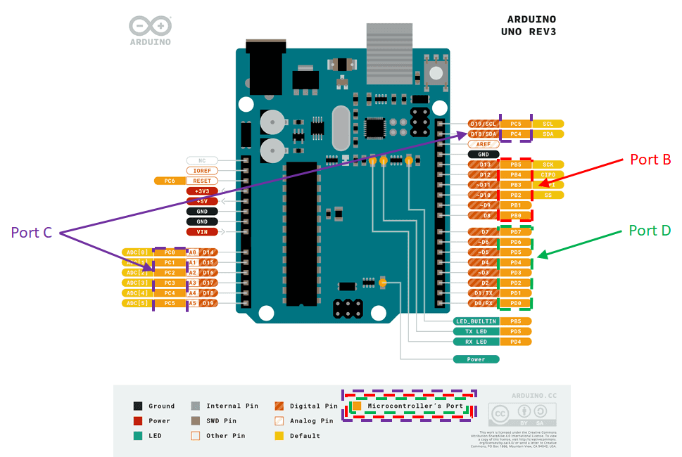
In this exercise, you will consider the Port D pins on I/O D0 to D7, as illustrated in
Note:
This method does not use the Arduino libraries to use the interrupts. Instead, you will be interfacing with the microcontroller control resisters directly, unlike the interrupt pins method shown in Exercise 2, which uses the pre-build Arduino libraries.
In order to use the pin change interrupts, you will need to:
- Determine which pins we wish to attach an interrupt to perform our operation.
- Ideally this would be from a single port.
- Enable the pin change interrupt for the port you wish to use.
- Select the pins we wish to use.
- Edit the associated interrupt service routine, ISR.
- In your ISR, you will need determine which pin(s) has changed state and work accordingly.
This process is explained in more depth in the
The advantage of using this more advanced approach is that any pin on the microcontroller can be used to read encoder outputs, dramatically increasing the number of encoders that can be used in a system.
Let us consider a system with two encoders attached to an Arduino Uno on pins D3, D4, D5, and D6, for the encoder 1 A & B pins and the encoder 2 A & B pins, respectively. As can be seen from
The code below shows a snippet of code outlining a basic framework of how to initialise this process:
- Activate the pin change interrupts for PORT D, using the command:
PCICR |= 0b00000100; - Reset the port D pin change mask to ensure correct operation:
PCMSK2 = 0; - Select the interrupt pins of interest from the port D interrupt mask register:
PCMSK2 |= 0b01111000;
The masking operation tells the microcontroller which pins it needs to listen to and which pins to ignore. This operation is needed to avoid the interrupt being triggered by changes in pins that are not connected to the encoders.
void setup()
{
PCICR |= 0b00000100;
PCMSK2 = 0;
PCMSK2 |= 0b01111000;
}
void loop()
{
// Put your main code here, to run repeatedly:
}
// This is the interrupt service routine for the Port D pin change interrupt
// Nore: you cannot define the name for this ISR
ISR (PCINT2_vect){
}
The interrupts are now only active on the 4 pins connected to the encoders, D3 to D6. When one of the pins changes its state, the function ISR(PCINT2_vect) is automatically executed. Note: PCINT2_vect is the interrupt request handler for PORT D and is required code work for the ISR.
One method to measure the output of the attached encoders is to define a look-up table to modify the encoder counter. The look-up table output defines whether the encoder counter is incremented, decremented, or left unchanged, based on the values of pervious measured state and the current measured state of the encoder.
We can define an encoder variable for each encoder, made up 4 bits of data arranged in the form, shown in

Using this encoding, one can create the following
Where: No = No rotation (current state = previous state), and NA = Not applicable (Impossible condition. Only one bit at a time can change)
Note
Analyse
The resulting 4-bit binary encoder variable produces a decimal number between 0 and 15. This number can then be used to index an array of data - the lookup table, comprising of the data in column 5 from Table 4. It is important to keep all entries, even the impossible ones, so that one can create the following lookup table array:
static const int9_t lookup_table[] = {0,-1,1,0,1,0,0,-1,-1,0,0,1,0,1,-1,0};
The code example in DualEncoderUsingPinChangeInterrupts.ino, presented below, provides the full code for reading 2 encoders on digital pins, D3, D4, D5, and D6, as described above.
Procedure:
- Using the technique described above, modify your Arduino code that you wrote for Exercise 2 to use the pin change interrupt for a single encoder attached to pins D2 and D3.
- When you have this working, try changing the encoder connection pins and modify your script accordingly.
// Initialise the encoder counter variables
volatile long enc1_count = 0;
volatile long enc2_count = 0;
// Intialise a variable to to record the tick counter value
long tickValue = 0;
void setup() {
PCICR |= 0b00000100; // Activate the port D pin change interrupt on the
// pin change interrupt control register
PCMSK2 = 0; // Reset the port D pin change mask
PCMSK2 |= 0b01111000; // Select the interrupt pins of interest from the
// port D interrupt mask register
// Define the pin modes dor D3, D4, D4, D6
pinMode(4, INPUT);
pinMode(5, INPUT);
pinMode(6, INPUT);
pinMode(7, INPUT);
// Open the serial port at 9600 baud
Serial.begin(9600);
tickValue = millis(); // Record an initial tick counter value
}
void loop() {
if (millis() >= tickValue + 100) { // if 100ms has elapsed sine the last
// time the followin code block ran
tickValue = millis(); // Record the current tick counter value
// Display the current encoder counter values on the serial monitor
Serial.print("Encoder 1 Count = ");
Serial.print(enc1_count);
Serial.print("\tEncoder 2 Count = ");
Serial.println(enc2_count);
}
}
// This is the the interrupt service routine for the Port D pin change
// interrupt
// Note: you cannot define the name for this ISR
ISR(PCINT2_vect) {
static const int8_t lookup_table[] = {
0, -1, 1, 0, 1, 0, 0, -1, -1, 0, 0, 1, 0, 1, -1, 0 };
// Byte that stores the current and previous state of the encoder outputs
// for encoder 1
static uint8_t enc1_val = 0;
// Byte that stores the current and previous state of the encoder outputs
// for encoder 2
static uint8_t enc2_val = 0;
// Shift the previous current encoder value to the pervious position
enc1_val = enc1_val << 2;
// The following line is a compound instruction:
// Read prot D and use an AND mask to remove bit information, then Shift
// the data relating to D3 and D4 to the first 2 bits. OR this with the
// enc1_val register to form the 4-bit current and previous encoder variable
enc1_Val = enc1_val | ((PIND & 0b00011000) >> 3);
// Add the lookup table value relating to enc1_val to the encoder 1 counter
enc1_count += lookup_table[enc1_val & 0b00001111];
// Shift the previous current encoder value to the pervious position
enc2_val = enc2_val << 2;
// The following line is a compound instruction:
// Read prot D and use an AND mask to remove bit information, then Shift
// the data relating to D5 and D6 to the first 2 bits. OR this with the
// enc1_val register to form the 4-bit current and previous encoder variable
enc2_Val = enc2_val | ((PIND & 0b01100000) >> 5);
// Add the lookup table value relating to enc2_val to the encoder 2 counter
enc2_count += lookup_table[enc2_val & 0b00001111];
}
Bitshift operations
Bitshift operations are used to manipulate variables at a bit level. The right bit-shift operator (>>) is used to shift bits to the right (e.g. y=x>>3 means take x, shift the bits 3 positions to the right and save the results in y). The left bit-shift operator (<<) operates in a similar way but shifts bits to the left.
Also Note
After computing the encoder count, one still needs to convert it to revolutions of the encoder, or revolutions of motor shaft, using suitable constants.
Advanced Exercises
Introduction to the More Advanced Exercises
Read This Before Attempting These Exercises
Before starting these exercises, you should have completed all the basic exercises. You will not receive any credit for completing these Advanced exercises until you have had all the Basec exercises marked.
These advanced exercises more concerned with the integration of the interfacing concepts that you have worked on in the
As discussed in the
- Advanced:
PI Control – IR Sensor Distance : During this exercise you, will use the IR distance sensor as a feedback element to implement a PI controlled distance tracking system with your robot. - Advanced:
PI Control – Encoder Position : during this exercise, you will implement a PI controller to track a position command, and use a finite state machine to control the system reference. - Advanced:
PI Control – IR with Sequence : During this exercise, you will use all the elements of the Basic and previous Advanced exercises to implement a sequences control system for your robot.
Note
To gain credit for these Advanced exercises, you must have completed, and have had marked, all the
The
Each of these exercises will be assessed during the laboratory session, using the assessment structure outlined in the The
Warning
DO NOT leave all your exercises until the end of the 3rd laboratory session to get marked. This may result in you running out of time to get your work marked within the allotted time, and you will lose marks. Instead, you should get your work marked as you complete each assessed exercise.
Controlling the Distance of the robot from a Target
GTA Marking
This is an assessed Exercise. When you have completed the
Before Continuing
Before starting these exercises, you should ensure that you have completed all the
Introduction
During this exercise you will write a program that will maintain a set distance between the robot chassis from a target. You will implement a closed loop control system with a PI controller, the IR sensor for distance feedback and a PWM actuation signal will be fed to the motor driver board.
The circuit requirements for this exercise is that of the
The following video is a quick demonstration of the final outcome from this exercise:
The PI Controller Algorithm
PI controllers theory is discussed elsewhere in your course notes from other modules, so will not be comprehensively covered in this section.
A proportional and integral, PI, controller can be used to control the behaviour of a system - in the case the position of the robot chassis. The Pi controller sits within a closed loop control system, as shown in the Block diagram, below:

Where: \(R(t)\) is the reference signal, \(e(t)\) is the error signal, \(m(t)\) is the manipulated variable and \(y(t)\) is the system output, and \(Gp\) is the process dynamics of the robot chassis.
The structure of the PI controller is shown above, and can be represented with the following time domain equation:
A Block diagram of the above PI control algorithm is shown below:

*Where: \(e(t)\) is the error, \(p(t)\) is the proportional term, \(i(t)\) is the integral term, and \(m(t)\) is the manipulated variable. \(K_p\) and \(K_i\) are the controller gains.
The PI controller algorithm, described in the above equation, cannot be directly implemented on the Arduino, instead, it must be discretized.
To achaive this, first we split the PI controller into the proportional, p(t), and integral, i(t), components, then discretize the components individually:
The proportional term: $ p(t)=K_p\,e(t)=K_p(r(t)-y(t)) $
This discretizes to: $ p[k]=K_p\,e[k]=K_p(r[k]-y[k]) $, where: \(k\) is the current time step.
The integral term: $i(t)=K_i\int_{-\infty}^\infty e(t)\,dt \space\space \Longleftrightarrow \space\space \frac{di(t)}{dt}=K_i\,e(t) $
We can use a Backward difference method, to discretize the derivitive function:
Where: \(\Delta T\) is the sample period for the controller.
Finally, the manipulated variable, \(m[k]\), can be found: $$ m[k]=p[k] + i[k] $$
Note
The integral term is susceptible to a process called integral wind-up
if i > 255 {
i = 255;
}
else if (i < -255) {
i = -255;
}
i is the current integral term, \(i[k]\).
The integral controller can be implemented in function, to improve readability of your main loop, as illustrated in the following example code:
int piControllerfunction(float contrKp, float contrKi,
float contrRef, float contrFB, float deltaT){
// Calculate the control error
contrError = contrRef - contrFB;
// Calculate the proportional term
float p = contrError * contrKp
// Calculate the integral term
float i = iPrev + (contrError * contrKi * deltaT)
// Bound the integral term to 255
if i > 255 {
i = 255;
}
else if (i < -255) {
i = -255;
}
// calculate the manipulated variable
float m = p + i
// Bound the manipulated variable to 255
if m > 255 {
m = 255;
}
else if (m < -255) {
m = -255;
}
// Save the integral term for the next iteration
iPrev = i;
// Recast the manipulated variable and return its value
return (int)m;
}
Notes for the above code
The above code is a function and should be called periodically from the main() function. On the prototype we used a control sample period of 10ms.
The variable iPrev must be declared and initialised in the global variable space, i.e.: float iPrev = 0;.
The variables contrKp, contrKi, contrRef, contrFB and deltaT must be passed to the function call as floating point variables.
A Note on Code Timing and Determinacy for Embedded Systems
When implementing a PI controller on an embedded system, it is important to maintain strict timing of the algorithm, to ensure that you are reading the inputs and sensors, and processing the controller algorithm at known times, normally at specific time intervals. Maintaining strict and consistent timing for these ensures that the algorithms you are using function as expected and produce predictable behaviour.
Using delay() functions within your code often leads to code that does not have consistent timing, and it is often difficult to predict the code execution time for sections of code.
To maintain more consistent timing in your code, you should use the millisecond tick timer function, millis(), to provide a timing source for your code execution, similar to that used in the loop().
Assessed Exercise
During this exercise you will write a program that will maintain a set distance between the robot chassis from a target. You will implement a closed loop control system with a PI controller, the IR sensor for distance feedback and a PWM actuation signal will be fed to the motor driver board.
Procedure:
- Ensure that you have the completed the building of the robot chassis and the electronic circuit, as described in the
Building the Robot Chassis document. -
A good starting point for the code for this exercise is the assessed exercise you completed for the
Motor and Encoder section -
The lolly stick should be rained to the vertical position at the start of the exercise demonstration.
- Write a program that maintains the robot chassis 30cm from a target, (the kit box stood up on its end works well for this):
- Uses the IR sensor to measure the distance to the target
- The robot chassis should be actuated using the yellow gear motor, with wheel attached, and driven from the driver board.
- A PI controller must be used to control the system in closed loop, with the output of the PI controller providing the PWM signal, and setting the BI1 and BI2 inputs to the driver board.
- The following controller gains should be used:
- \(K_p = -10\)
- \(K_i = -20\)
- Ensure the code you write does not use the
delay()function to control timing in the main function,loop(), instead use the millisecond tick timer function,millis(), to provide a timing source for your code execution.- On the prototype we used a control sample period of 10ms.
Note
The \(K_p\) and \(K_i\) values are negative because of the negative slope of the IR sensor response.
The controller values have been selected to show a slight overshoot when the target is moved, if used with a control sample period of 10ms.
What do we expect to see in the demonstration?
- At the start of the demonstration, your robot chassis should be placed approximately 30cm from the target, (the kit box stood up on its end works well for this).
- On resetting the Arduino, your lolly stick should go to the horizontal position, if it is not already there.
- After a one-second delay, the lolly stick assembly should raise to the vertical position.
- After a further one-second delay, the robot chassis should start to track the position of the target.
- You must show that you have implemented the position control using a PI controller.
Now Get Your Work Marked by a GTA
Once you have completed your code and are satisfied with its operation, you should show your work to a GTA for marking.
Closed Loop Control Using the Encoder as a Feedback Sensor
GTA Marking
This is an assessed Exercise. When you have completed the
Before Continuing
Before starting these exercises, you should ensure that you have completed all the
Introduction
During this exercise you will write a program to move the robot chassis forwards and backwards through a sequence of set distances. The robot must be controlled in closed loop, using a PI controller, and using the motor encoder as the feedback sensor.
Your code should use a simple finite state machine to control the sequences of operation.
The following video is a quick demonstration of the final outcome from this exercise:
A Simple Finite State Machine
In simple terms, finite state machines are a design methodology for designing and implementing a program to a system that is triggered by events that occur. We will only consider their use in the most simple form.
A simple state machine can define the operation of a system in terms of the “states” of the system and the triggers, (or events), that decide when to transition between one state and another: “state transition conditions”. The system can only transition from one state and another when state transition conditions are satisfied
Let us consider a very simple system: a system consisting of a light bulb and an on/off switch. The light can only be on or off, therefore we can define two-states to describe this behaviour. The state transition condition to transition between state 1, (on), to state 2, (off), is for the switch to be moved to the off position. Similarly, to transition from state 2 to state 1, the switch must be moved to the on position. This operation is summarised on the state transition diagram, shown in

This is a very simple state machine example for a 2 state system. We can extend this idea to a system which varies the light level output between: off, dimmed, medium and bright, with state transitions defined by two buttons: on and off. When the system starts, the system automatically switches to state 1: off. The on button is used to switch the light on and toggle the system states between states 2, 3 and 4, to adjust the brightness, whereas if the off button is pressed, the system will always return to the off state. This operation is summarised on the state transition diagram,

To implement the switch statement, where each case statement defines the state behaviour of the system, such that:
#define onPin 1 // On button pin
#define offPin 2 // Of button pin
#define outputPin 13 // LED output Pin
int state = 1; // Initialise the state variable to 1
int brightness = 0; // 0 = Off, 100 = Dimmed, 175 = Medium, 255 = Bright
int onButton = 0;
int offButton = 0;
void setup() {
pinMode(onPin, INPUT);
pinMode(offPin, INPUT);
}
void loop() {
// Read the states of the buttons
onButton = digitalRead(onPin);
offButton = digitalRead(offPin);
// Process the state machine
switch (state) {
case 1:
// Process the current state operations
brightness = 0;
analogWrite(outputPin,brightness);
// Check for state transition conditions
if (onButton == 1) state = 2; // if on button pressed, change to state 2
break;
case 2:
// Process the current state operations
brightness = 100;
analogWrite(outputPin,brightness);
// Check for state transition conditions
if (onButton == 1) state = 3; // if on button pressed, change to state 3
if (ofButton == 1) state = 1; // if off button pressed, change to state 1
break;
case 3:
// Process the current state operations
brightness = 175;
analogWrite(outputPin,brightness);
// Check for state transition conditions
if (onButton == 1) state = 4; // if on button pressed, change to state 4
if (ofButton == 1) state = 1; // if off button pressed, change to state 1
break;
case 4:
// Process the current state operations
brightness = 255;
analogWrite(outputPin,brightness);
// Check for state transition conditions
if (onButton == 1) state = 2; // if on button pressed, change to state 2
if (ofButton == 1) state = 1; // if off button pressed, change to state 1
break;
default:
// Process the unknown state operations
brightness = 0;
analogWrite(outputPin,brightness);
state = 1; // return to state 1
break;
}
delay(1000);
}
Note
The above code is functional, but the handling of the button presses is poor. This has been provided as a simple example of how to implement a simple state machine, with multiple state, and state transition events.
Assessed Exercise
During this exercise, you will write a program to move the robot forwards and backwards between several positions. Your solution must include:
- A PI controller to control the position of the robot, using the motor encoder as position feedback
- You must not use open loop timing to control your system.
- A simple state machine to switch between states of the system, (in this case the position demand for the robot).
- All timing must be achieved using the millisecond tick timer,
milli(), i.e. your loop function must not containdelay()ordelayMicroseconds()functions.
Hint:
The system states are a position demand reference value for the PI controller. Process the position controller within the case statements.
The sampling time for the PI controller should be set to 10ms.
We recommend using the following controller gains: Kp = 4.0, Ki = 0.0. These controller values should give an oscillatory response.
What do we expect to see from the demonstration?
- When the robot is reset, there is a delay of 3 seconds before the system starts
- The robot should move forward 30cm
- When it has reached its destination, the robot should wait 2 seconds.
- The robot should move backward 15cm
- When it has reached its destination, the robot should wait 2 seconds.
- The robot should move forward 30cm
- When it has reached its destination, the robot should wait 2 seconds.
- The robot should move backward 45cm, returning to the start point.
- When it has reached its destination, the robot should wait 2 seconds, before repeating the above sequence.
You show the GTAs the following in your code:
- You have not used
delay()ordelayMicroseconds()functions to achieve the timing of the code - You have used a
switchstatement to achieve the state machine behaviour of the system - You are using a PI controller to control the position of the robot
Now Get Your Work Marked by a GTA
Once you have completed your code and are satisfied with its operation, you should show your work to a GTA for marking.
Sequenced Control of the Robot Chassis
GTA Marking
This is an assessed Exercise. When you have completed the
Before Continuing
Before starting these exercises, you should ensure that you have completed all the
Introduction
During this exercise, you will integrate all the concepts you have used so far, for both the Basic and Advanced exercises, into one sequence of operations, as described below.
The following video is a quick demonstration of the final outcome from this exercise:
Assessed Exercise
The sequence of action we expect you to demonstrate is:
- Starting with your robot places approximately 30cm from a target, (a kit box standing on its edge will suffice).
- When the button is pressed, wait for 1 second.
- Lower the lolly stick assembly to the horizontal position.
- Wait 1 second.
- Flash your LEDs 3 times, (on 500ms, off 500ms).
- Raise the lolly stick assembly to the vertical position.
- Wait 1 second.
- Move the robot forwards 15cm, using closed loop PI control and encoder feedback.
- Wait 1 second.
- Move the robot backwards 30cm, using closed loop PI control and encoder feedback.
- Wait 1 second.
- Move the robot forwards 30cm, using closed loop PI control and encoder feedback.
- Wait 1 second.
- Move the robot backwards 15cm, using closed loop PI control and encoder feedback.
- Wait 1 second.
- For the next 20 seconds, track the position of the target to 30cm separation, using closed loop PI control and IR sensor feedback.
- Flash your LEDs 3 times, (on 500ms, off 500ms).
- Stop and wait for a button press.
- When the button is pressed, wait for 1 second - repeat the sequence.
What do we expect to see from the demonstration?
Show code.
Use above sequence.
Now Get Your Work Marked by a GTA
Once you have completed your code and are satisfied with its operation, you should show your work to a GTA for marking.
Assessment
Assessed Exercises
There are 9 assessed exercises, each will build on a previous exercise. Six of these exercises are classed as “
Note
You must complete all the
The marks weighting for each exercise is provided in
You will have three laboratory support sessions to complete these exercises, at the end of the 3rd laboratory we will stop marking. Any exercises not marked by the end of the session will not be marked.
To complete all the
The system has been designed, such that it is a sequential development, where each exercise builds on previous exercises, both in terms of hardware and software. This way, you do need to dismantle your circuits between exercises allowing you to work more efficiently across exercises.
Building the Robot
When you come to build the system, you can either build it all the circuitry at the start or you can build the circuitry section by section, as you progress through the exercises. Details of the mechanical and electrical systems are provided in the
Suggested Timeline for the Basic Exercises
There is no rigid structure for your progress through these exercises, but the following time plan, (this is a summary of the
If you are planning to complete the
Note
You must have completed all the
Peer Assessment
There will be a BuddyCheck peer assessment for this section of the course, which is accessed through Blackboard. This must be completed in the deadline - details on Blackboard. Failure to complete this peer assessment within the deadline will result in a loss of 10% from your group mark, (only for the non-submitting individual).
All peer assessments will be individually viewed, both in terms of the mark awarded and the worded comments provided. The peer assessment will only be used to penalise students that are poorly contributing to the group effort. We will not penalise students on peer assessment scored alone, but will use these in conjunction with the worded responses and laboratory attendance. (The worded responses hold considerably more sway in deciding if a student should be penalised for not engaging and contributing to the group activities.)